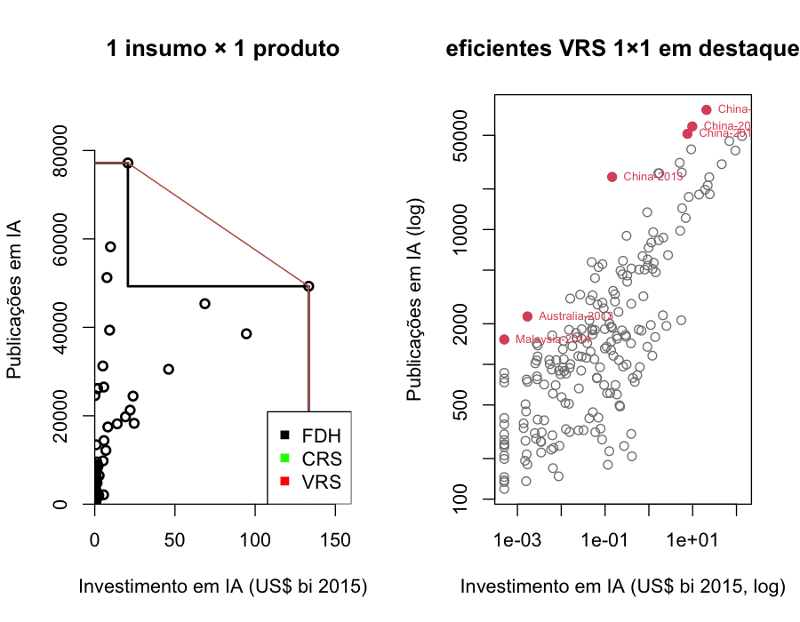
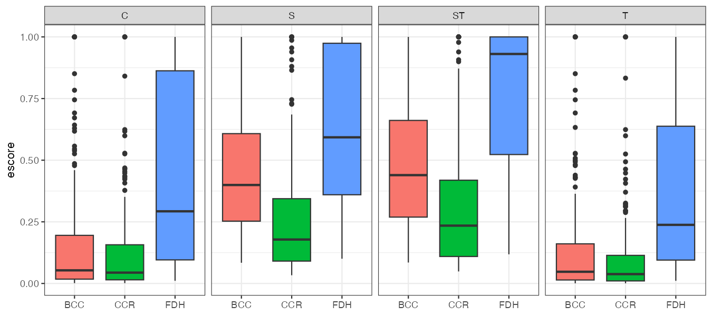
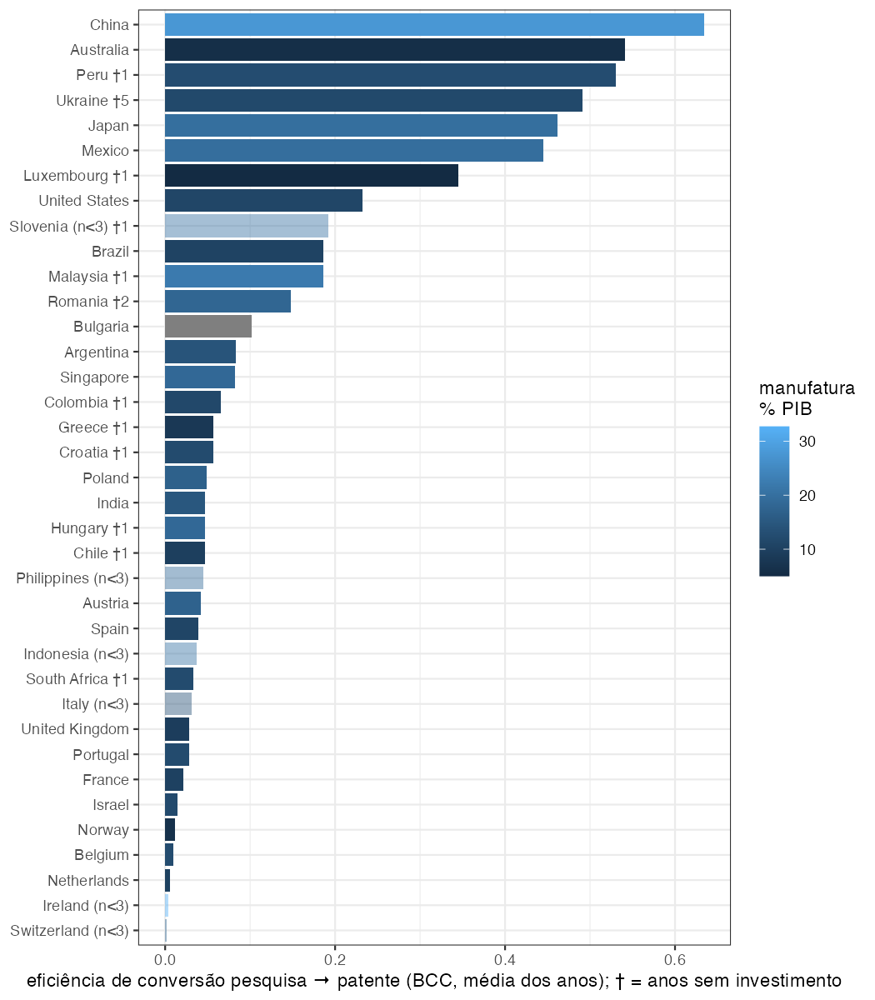
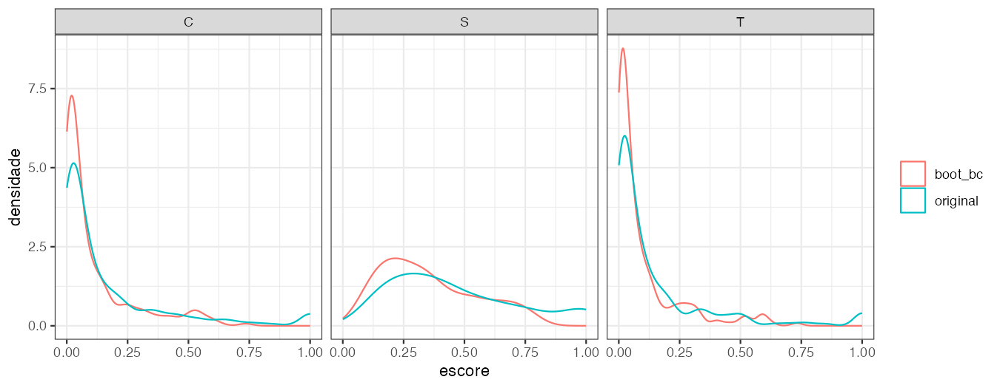
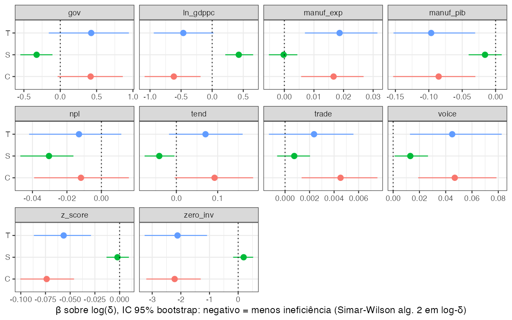
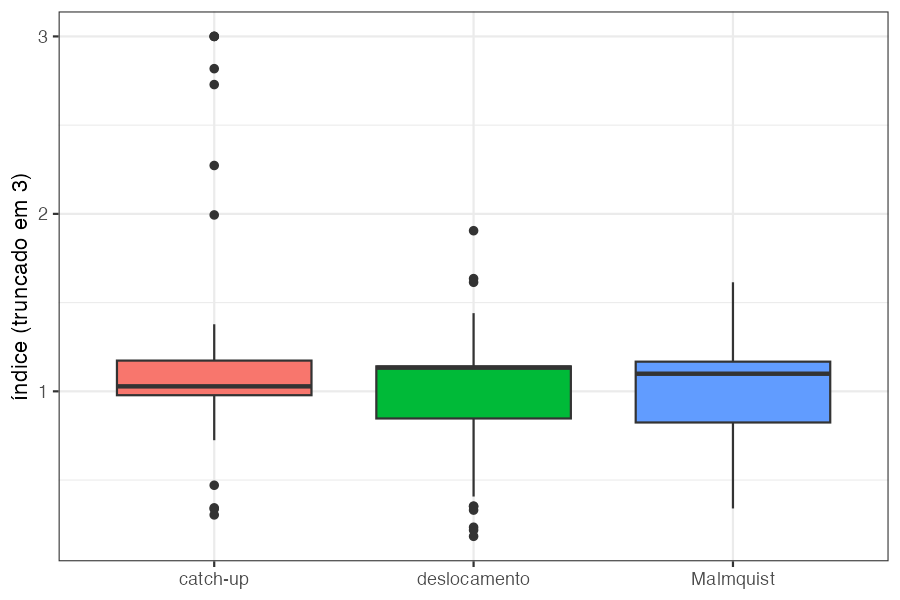

<title>Da Verba à Patente</title>
<link rel="stylesheet" href="https://fonts.googleapis.com/css2?family=Fraunces:opsz,wght@9..144,600&family=Source+Sans+3:ital,wght@0,400;0,600;1,400&family=JetBrains+Mono:wght@400;600&display=swap">
<style id="estilo">
:root{color-scheme:light dark;padding-top:env(safe-area-inset-top,0px);padding-bottom:env(safe-area-inset-bottom,0px)}
body{margin:0}
img{max-width:100%}
[hidden]{display:none!important}
:root{--bg:#F6F7F4;--ink:#1C211F;--muted:#5B6661;--line:#D6DBD5;--accent:#0E6B5A;--rust:#B2431F;--slate:#35506B;--code-bg:#ECEFEA;--con-bg:#1F2422;--con-ink:#DCE3DD;--con-muted:#9AA59F;--con-line:#2E3532;--diag-bg:#F8ECE6;--change-bg:#E8EEF5;--good-bg:#E6F2EE;--note-bg:#EEF0EC;--img-bg:#FFFFFF;--barra-bg:#EFF1EDF2;--edit:#B2431F}
@media (prefers-color-scheme: dark){:root:not([data-theme="light"]){--bg:#141816;--ink:#E6EAE5;--muted:#9AA59F;--line:#2A312D;--accent:#4FBFA6;--rust:#E48660;--slate:#7FA3C7;--code-bg:#1D2320;--con-bg:#0C0F0E;--con-ink:#D5DCD7;--con-muted:#7E8A84;--con-line:#202623;--diag-bg:#2A1E19;--change-bg:#1B2430;--good-bg:#172622;--note-bg:#1E2320;--img-bg:#F2F4F1;--barra-bg:#1A1F1CF2;--edit:#E48660}}
:root[data-theme="dark"]{--bg:#141816;--ink:#E6EAE5;--muted:#9AA59F;--line:#2A312D;--accent:#4FBFA6;--rust:#E48660;--slate:#7FA3C7;--code-bg:#1D2320;--con-bg:#0C0F0E;--con-ink:#D5DCD7;--con-muted:#7E8A84;--con-line:#202623;--diag-bg:#2A1E19;--change-bg:#1B2430;--good-bg:#172622;--note-bg:#1E2320;--img-bg:#F2F4F1;--barra-bg:#1A1F1CF2;--edit:#E48660}
body{background:var(--bg);color:var(--ink);font-family:"Source Sans 3",system-ui,-apple-system,"Segoe UI",Roboto,sans-serif;font-size:17px;line-height:1.55}
main{max-width:76ch;margin:0 auto;padding-inline:clamp(16px,4vw,40px);padding-block:28px 96px}
h1,h2,h3{font-family:"Fraunces",Georgia,"Times New Roman",serif;font-weight:600;line-height:1.15;text-wrap:balance;color:var(--ink)}
h1{font-size:clamp(30px,5vw,44px);font-variation-settings:"opsz" 144;margin:0 0 12px}
h2{font-size:clamp(22px,3.2vw,28px);margin:56px 0 14px;padding-top:22px;border-top:1px solid var(--line);scroll-margin-top:72px}
h3{font-size:20px;margin:28px 0 8px}
p{margin:0 0 16px}
p.meta{color:var(--muted);font-size:15px;margin-bottom:22px}
.label{text-transform:uppercase;letter-spacing:.08em;font-size:12px;font-weight:600;color:var(--muted)}
nav.toc{background:var(--note-bg);border-radius:6px;padding:16px 20px;margin:26px 0 8px}
nav.toc ol{margin:8px 0 0;padding-left:20px;columns:2;column-gap:28px}
@media (max-width:640px){nav.toc ol{columns:1}}
nav.toc li{break-inside:avoid;margin-bottom:4px}
nav.toc a{color:inherit;text-decoration:none}
nav.toc a:hover,nav.toc a:focus-visible{text-decoration:underline}
figure{margin:20px 0}
figure.print{border:1px solid var(--line);border-radius:6px;overflow:hidden;background:var(--code-bg)}
figure.print .print-label{font:600 11px/1 "JetBrains Mono",ui-monospace,SFMono-Regular,Menlo,monospace;letter-spacing:.12em;text-transform:uppercase;color:var(--muted);padding:9px 14px;border-bottom:1px solid var(--line)}
figure.print.console{background:var(--con-bg);border-color:var(--con-line)}
figure.print.console .print-label{color:var(--con-muted);border-bottom-color:var(--con-line)}
pre{margin:0;padding:12px 14px;overflow-x:auto;font:13px/1.55 "JetBrains Mono",ui-monospace,SFMono-Regular,Menlo,monospace;white-space:pre;color:var(--ink)}
pre.console{color:var(--con-ink)}
code{font:.92em "JetBrains Mono",ui-monospace,SFMono-Regular,Menlo,monospace;background:var(--code-bg);padding:1px 5px;border-radius:4px}
.callout{border-left:4px solid var(--slate);background:var(--change-bg);padding:14px 18px;margin:18px 0;border-radius:0 6px 6px 0}
.callout.diag{border-color:var(--rust);background:var(--diag-bg)}
.callout.good{border-color:var(--accent);background:var(--good-bg)}
.callout.note{border-color:var(--muted);background:var(--note-bg)}
.callout p{margin:0}
.callout p>strong:first-child{text-transform:uppercase;letter-spacing:.06em;font-size:13px;margin-right:6px}
figure.fig img{width:100%;height:auto;border:1px solid var(--line);border-radius:4px;background:var(--img-bg)}
figure.fig figcaption{color:var(--muted);font-size:14px;margin-top:8px}
.tbl{overflow-x:auto;margin:18px 0}
table{border-collapse:collapse;width:100%;font-size:15px;font-variant-numeric:tabular-nums}
th,td{text-align:left;padding:8px 10px;border-bottom:1px solid var(--line);vertical-align:top}
th{font-weight:600;color:var(--muted);font-size:12px;text-transform:uppercase;letter-spacing:.05em}
ul,ol{padding-left:22px;margin:0 0 16px}
li{margin-bottom:6px}
a{color:var(--accent)}
a:focus-visible,button:focus-visible,[contenteditable]:focus-visible{outline:2px solid var(--accent);outline-offset:2px}
.barra{position:sticky;top:env(safe-area-inset-top,0px);z-index:20;display:flex;flex-wrap:wrap;gap:8px;align-items:center;background:var(--barra-bg);backdrop-filter:blur(8px);border-bottom:1px solid var(--line);padding:10px clamp(16px,4vw,40px)}
.barra .marca{font-family:"Fraunces",Georgia,serif;font-weight:600;font-size:15px;margin-right:auto}
.barra button{font:600 13px/1 "Source Sans 3",system-ui,sans-serif;padding:8px 14px;border-radius:6px;border:1px solid var(--line);background:transparent;color:var(--ink);cursor:pointer}
.barra button:hover:not(:disabled){border-color:var(--accent);color:var(--accent)}
.barra button.primario{background:var(--accent);border-color:var(--accent);color:#fff}
.barra button:disabled{opacity:.5;cursor:default}
.barra .aviso{font-size:13px;color:var(--muted);flex-basis:100%}
body.modo-edicao [data-editavel]{outline:1px dashed var(--edit);outline-offset:6px;border-radius:2px}
body.modo-edicao [contenteditable="true"]:focus{outline:2px solid var(--edit);outline-offset:6px}
body.modo-edicao figure.fig figcaption{outline:1px dashed var(--edit);outline-offset:4px}
@media print{.barra{display:none}}
</style>
<header class="barra"><span class="marca">Eficiência do investimento em IA</span><button id="btn-editar" type="button" hidden>Editar textos</button><button id="btn-salvar" type="button" class="primario" hidden>Salvar edição</button><button id="btn-cancelar" type="button" hidden>Cancelar</button><span class="aviso" id="aviso" hidden></span></header>
<main>
<h1 id="b0" data-editavel>Eficiência do investimento em IA</h1>
<p id="b1" class="meta" data-editavel><strong>Autor:</strong> Fernando Silva · <strong>Disciplina:</strong> Introdução à Análise de Eficiência em R</p>
<p id="b2" data-editavel>Este relatório apresenta o trabalho sobre eficiência do investimento em IA. Cada seção parte de um resultado obtido, analisa o que ele revela e registra a melhoria que foi incorporada ao trabalho a partir dessa análise.</p>
<p id="b3" data-editavel>O bloco marcado <strong>R</strong> é o código que rodou; o bloco <strong>saída</strong> é o que o console devolveu.</p>
<nav id="sumario" class="toc"><div class="label">Sumário</div><ol><li><a href="#s1">1. Pergunta e hipóteses</a></li><li><a href="#s2">2. Segunda proposta</a></li><li><a href="#s3">3. Fronteira por ano ou fronteira agrupada?</a></li><li><a href="#s4">4. Os zeros e o tamanho do deslocamento</a></li><li><a href="#s5">5. O núcleo da v3 e o que ele mostra</a></li><li><a href="#s6">6. Bootstrap: quando o pacote devolve escores negativos</a></li><li><a href="#s7">7. Segundo estágio: do gap em OLS ao Algoritmo 2 em log(δ)</a></li><li><a href="#s8">8. O que mais o template mostrou</a></li><li><a href="#s9">9. A reviravolta: Voice &amp; Accountability</a></li><li><a href="#s10">10. Situação atual</a></li><li><a href="#s11">11. Decisões em aberto</a></li><li><a href="#s12">12. Pontos a validar com o professor</a></li><li><a href="#s13">Anexo: reprodução</a></li></ol></nav>
<h2 id="s1" data-editavel>1. Pergunta e hipóteses</h2>
<p id="b5" data-editavel><strong>Pergunta:</strong> Quão eficientes são os países em converter esforço financeiro em IA — investimento privado em IA e gasto em P&amp;D — em produção científica (publicações) e tecnológica (patentes) em IA, e a base industrial condiciona essa conversão?</p>
<p id="b6" data-editavel>O desenho adotado é o seguinte: insumos = investimento em IA e P&amp;D; produtos = publicações e patentes de IA; CCR e BCC para ter o contrafactual de retornos de escala; um segundo estágio com contextuais, com uma proxy de base industrial; zeros mantidos com um deslocamento; painel desbalanceado.</p>
<ul id="b7" data-editavel><li><strong>H1.</strong> Países com maior participação da manufatura no PIB são mais eficientes em produzir patentes (modelo T) e em converter pesquisa em patente (modelo C).</li><li><strong>H2.</strong> A base industrial importa menos para a eficiência científica (modelo S) do que para a tecnológica: a assimetria ciência–tecnologia é sistêmica, não de volume.</li><li><strong>Exploratórias.</strong> Qualidade institucional e solidez financeira afetam a eficiência; a fronteira se deslocou com o aumento do investimento (Malmquist).</li></ul>
<p id="b8" data-editavel>Quatro modelos de fronteira e todos usam a mesma fronteira única com as 208 observações país-ano, orientada a produto, estimada em CCR e BCC; o que muda entre eles é só o que entra como insumo e como produto.</p>
<div id="b9" class="tbl" data-editavel><table><thead><tr><th>Modelo</th><th>Insumos</th><th>Produto</th><th>Pergunta que responde</th></tr></thead><tbody><tr><td><strong>S</strong>, científico</td><td>investimento em IA, P&amp;D</td><td>publicações</td><td>quanta ciência sai por dólar gasto</td></tr><tr><td><strong>T</strong>, tecnológico</td><td>investimento em IA, P&amp;D</td><td>patentes</td><td>quanta tecnologia sai por dólar gasto</td></tr><tr><td><strong>ST</strong>, síntese</td><td>investimento em IA, P&amp;D</td><td>publicações e patentes</td><td>os dois produtos na mesma fronteira</td></tr><tr><td><strong>C</strong>, conversão</td><td>publicações, investimento em IA, P&amp;D</td><td>patentes</td><td>quantas patentes saem dado o dinheiro e a ciência já produzida</td></tr></tbody></table></div>
<p id="b10" data-editavel>Tudo em dólares com base o ano 2015 (corrigida inflação) e em contagem. O modelo C é o que testa diretamente a hipótese sobre pesquisa que vira patente: ele coloca as publicações do lado dos insumos, e por isso substitui a diferença entre dois escores que a v2 propunha como variável dependente.</p>
<p id="b11" data-editavel>O que contaria como resposta: H1 respondida se o coeficiente da manufatura no segundo estágio for positivo sobre o escore de patentes e sobrevivesse a mudanças de unidades, de estimador e de amostra. H2 respondida se o mesmo coeficiente fosse fraco ou nulo sobre o escore de publicações. Os instrumentos da disciplina entram assim: FDH, CCR e BCC para as fronteiras; folgas, supereficiência e Order-m para os outliers; bootstrap para os intervalos; SFA como contraparte paramétrica; Malmquist para a dinâmica; fusões e TOPSIS como leituras complementares; Tobit e regressão truncada bootstrap para o segundo estágio.</p>
<p id="b12" data-editavel>Preparação comum a todos os trechos:</p>
<figure id="b13" class="print"><div class="print-label">R</div><pre class="code"># Preparação comum aos trechos deste relatório: base tratada pelo pipeline
# (resultados/base_v3.csv) e funções auxiliares no padrão do template.
suppressPackageStartupMessages({
  library(tidyverse)
  library(Benchmarking)
  library(rDEA)
  library(nonparaeff)
  library(censReg)
  library(truncreg)
  library(sandwich)
  library(lmtest)
})
select &lt;- dplyr::select
filter &lt;- dplyr::filter
lag &lt;- dplyr::lag
dea &lt;- Benchmarking::dea
set.seed(1)

dados &lt;- read_csv("resultados/base_v3.csv", show_col_types = FALSE) %&gt;%
  mutate(inv_bi = AI.Investment / 1e9)
x.extensivo &lt;- as.matrix(dados[, c("inv_usd", "rd_usd")])  # forma da v3
y.ambos &lt;- as.matrix(dados[, c("pubs", "pat")])

Escore &lt;- function(modelo) {
  # Escore em (0, 1], como no template da disciplina (1 / eff).
  pmin(1 / eff(modelo), 1)
}

PorAno &lt;- function(x, y, rts = "vrs") {
  # Estima uma fronteira por ano e devolve o escore de cada DMU.
  escore &lt;- rep(NA_real_, nrow(dados))
  for (ano in unique(dados$Year)) {
    linhas &lt;- which(dados$Year == ano)
    escore[linhas] &lt;- Escore(dea(x[linhas, , drop = FALSE],
                                 y[linhas, , drop = FALSE],
                                 RTS = rts, ORIENTATION = "out"))
  }
  escore
}

Spearman &lt;- function(a, b) {
  # Correlação de postos, arredondada para leitura.
  round(cor(a, b, method = "spearman", use = "complete.obs"), 3)
}</pre></figure>
<h2 id="s2" data-editavel>2. Segunda proposta</h2>
<p id="b15" data-editavel>A v2 usava as variáveis previstas, mas com unidades mistas, do jeito que saem da base: investimento em dólares, P&amp;D em % do PIB, publicações em contagem e patentes por milhão de habitantes, com uma fronteira por ano. A ideia era comparar o escore científico (S) com o tecnológico (T) e explicar a diferença.</p>
<figure id="b16" class="print"><div class="print-label">R</div><pre class="code"># Especificação da v2: fronteiras anuais; insumos = investimento em US$ bi
# (+ US$ 10 mi) e P&amp;D em % do PIB; produto = publicações (contagem) no
# modelo S e patentes PER CAPITA no modelo T.
x.v2 &lt;- cbind(dados$inv_bi + 0.01, dados$R.D_Percentage)
escore.s &lt;- PorAno(x.v2, cbind(dados$AI.Publications))
escore.t &lt;- PorAno(x.v2, cbind(dados$AI.Patent.Applications))
cat("Spearman(S, T) =", Spearman(escore.s, escore.t), "\n")
por.pais &lt;- dados %&gt;%
  mutate(gap = escore.t - escore.s) %&gt;%
  group_by(Country) %&gt;%
  summarise(gap = mean(gap),
            log_pop = log(mean(pop_mi)),
            log_pibpc = log(mean(GDP.per.capita))) %&gt;%
  arrange(gap)
cat("S &gt;&gt; T (publica, não patenteia):",
    paste(head(por.pais$Country, 6), round(head(por.pais$gap, 6), 2),
          collapse = ", "), "\n")
cat("T &gt;&gt; S:",
    paste(rev(tail(por.pais$Country, 3)),
          round(rev(tail(por.pais$gap, 3)), 2), collapse = ", "), "\n")
cat("cor(gap, log população) =",
    round(cor(por.pais$gap, por.pais$log_pop), 2), "\n")
round(summary(lm(gap ~ log_pop + log_pibpc,
                 data = por.pais))$coefficients, 3)</pre></figure>
<figure id="b17" class="print console"><div class="print-label">saída</div><pre class="console">Spearman(S, T) = 0.246 
S &gt;&gt; T (publica, não patenteia): India -0.93, Italy -0.86, Poland -0.73, Spain -0.68, Malaysia -0.62, Brazil -0.57 
T &gt;&gt; S: Luxembourg 0.83, Singapore 0.77, Slovenia 0.72 
cor(gap, log população) = -0.53 
            Estimate Std. Error t value Pr(&gt;|t|)
(Intercept)   -0.432      0.701  -0.616    0.542
log_pop       -0.105      0.040  -2.618    0.013
log_pibpc      0.060      0.063   0.961    0.344</pre></figure>
<p id="b18" data-editavel>O resultado: "o Brasil converte investimento em artigo, não em patente", com Índia, Itália, Polônia e Espanha na mesma lista e Luxemburgo e Singapura do outro lado.</p>
<div id="b19" class="callout diag" data-editavel><p><strong>Diagnóstico.</strong> O gap entre T e S tem correlação −0,53 com o log da população, e na regressão só a população explica o gap (coeficiente −0,105, p = 0,013; PIB per capita não). O modelo S, em contagem, premia países grandes; o modelo T, per capita, premia países pequenos e ricos. A "lista dos que publicam e não patenteiam" era, em boa parte, a lista dos países populosos.</p></div>
<p id="b20" data-editavel>Os mesmos modelos foram reestimados com unidades consistentes, nas duas formas possíveis.</p>
<figure id="b21" class="print"><div class="print-label">R</div><pre class="code"># Mesmos modelos com unidades consistentes: (a) tudo per capita;
# (b) tudo em contagem e dólares, que é a forma adotada na v3.
x.intensivo &lt;- cbind(dados$inv_pc, dados$rd_pct)
escore.s.pc &lt;- PorAno(x.intensivo, cbind(dados$pubs_pm))
escore.t.pc &lt;- PorAno(x.intensivo, cbind(dados$pat_pm))
escore.s.cont &lt;- PorAno(x.extensivo, cbind(dados$pubs))
escore.t.cont &lt;- PorAno(x.extensivo, cbind(dados$pat))

GapPais &lt;- function(ciencia, tecnologia) {
  # Gap médio por país entre o escore tecnológico e o científico.
  dados %&gt;%
    mutate(gap = tecnologia - ciencia) %&gt;%
    group_by(Country) %&gt;%
    summarise(gap = round(mean(gap), 2)) %&gt;%
    deframe()
}
paises &lt;- c("Brazil", "India", "Spain", "Italy", "Luxembourg", "Singapore",
            "United States")
cbind(v2_mista = GapPais(escore.s, escore.t)[paises],
      per_capita = GapPais(escore.s.pc, escore.t.pc)[paises],
      contagem = GapPais(escore.s.cont, escore.t.cont)[paises])
cat("Spearman do escore S: v2 × per capita =",
    Spearman(escore.s, escore.s.pc), "| v2 × contagem =",
    Spearman(escore.s, escore.s.cont), "\n")
cat("Spearman do escore T: v2 × per capita =",
    Spearman(escore.t, escore.t.pc), "| v2 × contagem =",
    Spearman(escore.t, escore.t.cont), "\n")</pre></figure>
<figure id="b22" class="print console"><div class="print-label">saída</div><pre class="console">              v2_mista per_capita contagem
Brazil           -0.57       0.04    -0.31
India            -0.93      -0.07    -0.75
Spain            -0.68      -0.40    -0.76
Italy            -0.86      -0.74    -0.90
Luxembourg        0.83      -0.05     0.07
Singapore         0.77      -0.07    -0.21
United States     0.16       0.59    -0.13
Spearman do escore S: v2 × per capita = 0.11 | v2 × contagem = 0.862 
Spearman do escore T: v2 × per capita = 0.902 | v2 × contagem = 0.751 </pre></figure>
<div id="b23" class="callout change" data-editavel><p><strong>Melhoria incorporada.</strong> Tudo per capita ou tudo em contagem. O Brasil sai de −0,57 para 0,04 (per capita) ou −0,31 (contagem, meio da tabela); a Índia sai de −0,93 para −0,07 ou −0,75. O ranking científico da v2 não tem relação com o ranking per capita (Spearman 0,11). A forma em contagem e dólares passou a ser a principal, por ser a leitura literal da pergunta de pesquisa, isto é, o que se investe contra o quanto se gera; a forma per capita ficou como robustez.</p></div>
<h2 id="s3" data-editavel>3. Fronteira por ano ou fronteira agrupada?</h2>
<p id="b25" data-editavel>Na disciplina coloca as 115 companhia-ano numa única fronteira. A v2 fazia uma fronteira por ano, com 16 a 30 países.</p>
<figure id="b26" class="print"><div class="print-label">R</div><pre class="code"># Fronteiras anuais (16 a 30 DMUs) contra fronteira agrupada (208 DMUs),
# forma extensiva, modelo ST.
st.anual &lt;- PorAno(x.extensivo, y.ambos)
st.agrupada &lt;- Escore(dea(x.extensivo, y.ambos, RTS = "vrs",
                          ORIENTATION = "out"))
cat("n por ano:          ", paste(table(dados$Year), collapse = "   "), "\n")
cat("anual    | eficientes", round(100 * mean(st.anual &gt;= 1 - 1e-6), 1),
    "% | média por ano:",
    paste(sprintf("%.2f", tapply(st.anual, dados$Year, mean)),
          collapse = " "), "\n")
cat("agrupada | eficientes",
    round(100 * mean(st.agrupada &gt;= 1 - 1e-6), 1), " % | média por ano:",
    paste(sprintf("%.2f", tapply(st.agrupada, dados$Year, mean)),
          collapse = " "), "\n")
cat("Spearman(anual, agrupada) =", Spearman(st.anual, st.agrupada), "\n")</pre></figure>
<figure id="b27" class="print console"><div class="print-label">saída</div><pre class="console">n por ano:           22   23   23   26   26   30   24   18   16 
anual    | eficientes 36.1 % | média por ano: 0.71 0.73 0.76 0.64 0.68 0.68 0.65 0.71 0.80 
agrupada | eficientes 9.1  % | média por ano: 0.54 0.46 0.48 0.45 0.42 0.49 0.47 0.57 0.57 
Spearman(anual, agrupada) = 0.844 </pre></figure>
<div id="b28" class="callout diag" data-editavel><p><strong>Diagnóstico.</strong> Com fronteiras anuais, 36 % das DMUs são eficientes e o escore médio sobe justamente nos anos com menos países (0,80 em 2021, com n = 16). O escore acompanhava o tamanho da amostra. Na fronteira agrupada, 9 % são eficientes e os rankings mudam de forma moderada (Spearman 0,84).</p></div>
<div id="b29" class="callout change" data-editavel><p><strong>Melhoria incorporada.</strong> Fronteira agrupada com as 208 observações como desenho principal, como na aula, com o ano como contextual; as fronteiras anuais viram robustez. O Malmquist cuida do deslocamento da fronteira (seção 8).</p></div>
<figure id="b30" class="fig" data-editavel><figcaption>Fronteiras FDH, CRS e VRS em um insumo e um produto, e os eficientes VRS em escala log</figcaption></figure>
<figure id="b31" class="fig" data-editavel><figcaption>Distribuição dos escores por método e por modelo na fronteira agrupada</figcaption></figure>
<h2 id="s4" data-editavel>4. Os zeros e o tamanho do deslocamento</h2>
<p id="b33" data-editavel>A v2 manteve os 17 zeros de investimento somando uma constante ao insumo, testou três magnitudes e concluiu que o CCR era "brutalmente sensível" ao deslocamento.</p>
<figure id="b34" class="print"><div class="print-label">R</div><pre class="code"># Os 17 zeros de investimento e o deslocamento proposto na v2 (US$ 1, 10 e
# 100 mi) no CCR anual, modelo ST com as unidades da v2.
for (shift in c(0.001, 0.01, 0.1)) {
  ccr &lt;- PorAno(cbind(dados$inv_bi + shift, dados$R.D_Percentage),
                cbind(dados$AI.Publications, dados$AI.Patent.Applications),
                "crs")
  cat(sprintf(paste0("shift US$ %3.0f mi | CCR médio dos 17 zeros %.3f | ",
                     "eficientes %.1f%%\n"),
              shift * 1e3, mean(ccr[dados$zero_inv]),
              100 * mean(ccr[dados$zero_inv] &gt;= 1 - 1e-6)))
}
cat("menor investimento positivo: US$ 1 mi | mediana: US$ 89,6 mi\n")
# O BCC orientado a produto é invariante a translações do insumo
# (Ali &amp; Seiford, 1990):
bcc.1mi &lt;- PorAno(cbind(dados$inv_bi + 0.001, dados$R.D_Percentage),
                  cbind(dados$AI.Publications))
bcc.100mi &lt;- PorAno(cbind(dados$inv_bi + 0.1, dados$R.D_Percentage),
                    cbind(dados$AI.Publications))
cat("max |BCC(shift 1 mi) - BCC(shift 100 mi)| =",
    signif(max(abs(bcc.1mi - bcc.100mi)), 2), "\n")
# v3: deslocamento de metade do menor positivo (US$ 0,5 mi) e robustez sem
# os zeros, na fronteira agrupada.
positivos &lt;- which(!dados$zero_inv)
sem.zeros &lt;- Escore(dea(x.extensivo[positivos, ], y.ambos[positivos, ],
                        RTS = "vrs", ORIENTATION = "out"))
cat("Spearman(ST agrupada com os zeros, sem os zeros) =",
    Spearman(st.agrupada[positivos], sem.zeros), "\n")</pre></figure>
<figure id="b35" class="print console"><div class="print-label">saída</div><pre class="console">shift US$   1 mi | CCR médio dos 17 zeros 0.791 | eficientes 58.8%
shift US$  10 mi | CCR médio dos 17 zeros 0.585 | eficientes 23.5%
shift US$ 100 mi | CCR médio dos 17 zeros 0.319 | eficientes 5.9%
menor investimento positivo: US$ 1 mi | mediana: US$ 89,6 mi
max |BCC(shift 1 mi) - BCC(shift 100 mi)| = 2.2e-15 
Spearman(ST agrupada com os zeros, sem os zeros) = 0.988 </pre></figure>
<div id="b36" class="callout diag" data-editavel><p><strong>Diagnóstico.</strong> As constantes testadas (1, 10 e 100 milhões) eram uma, dez e cem vezes o menor valor positivo da base, e a maior delas passa da mediana da amostra. Somar 100 milhões a todos não é uma translação dos zeros, é uma distorção da variável inteira. Por outro lado, o BCC orientado a produto é invariante a translações do insumo (Ali &amp; Seiford, 1990), e a saída confirma: diferença de 2e-15 entre os deslocamentos.</p></div>
<div id="b37" class="callout change" data-editavel><p><strong>Melhoria incorporada.</strong> Deslocamento de US$ 0,5 milhão (metade do menor valor positivo), robustez com a amostra sem os zeros (Spearman 0,988 com a amostra completa) e eficiência de escala reportada só para as observações com investimento positivo, porque sob CCR ela é indefinida para os zeros. A dummy de zero entra no segundo estágio.</p></div>
<h2 id="s5" data-editavel>5. O núcleo da v3 e o que ele mostra</h2>
<p id="b39" data-editavel>Com unidades consistentes e fronteira agrupada, o trabalho estima quatro modelos: <strong>S</strong> (investimento, P&amp;D → publicações), <strong>T</strong> (→ patentes), <strong>ST</strong> (→ ambos) e <strong>C</strong> (publicações, investimento, P&amp;D → patentes), este último o teste direto da hipótese sobre pesquisa que vira patente.</p>
<div id="b40" class="tbl" data-editavel><table><thead><tr><th>Modelo</th><th>FDH eficientes</th><th>CCR eficientes</th><th>BCC eficientes</th><th>BCC média</th><th>Zeros eficientes (BCC)</th><th>Não-zeros eficientes</th></tr></thead><tbody><tr><td>S</td><td>25,0 %</td><td>2,4 %</td><td>7,7 %</td><td>0,459</td><td>23,5 %</td><td>6,3 %</td></tr><tr><td>T</td><td>18,3 %</td><td>1,9 %</td><td>3,4 %</td><td>0,146</td><td>11,8 %</td><td>2,6 %</td></tr><tr><td>ST</td><td>46,6 %</td><td>4,8 %</td><td>9,1 %</td><td>0,486</td><td>29,4 %</td><td>7,3 %</td></tr><tr><td>C</td><td>22,6 %</td><td>1,9 %</td><td>3,8 %</td><td>0,165</td><td>17,6 %</td><td>2,6 %</td></tr></tbody></table></div>
<p id="b41" data-editavel>Três coisas saltam da leitura dos escores por país (tabela <code>t03_medias_pais.csv</code>):</p>
<ul id="b42" data-editavel><li><strong>Quem está na fronteira.</strong> Em S: Austrália-2013, China (2013, 2019–2021), Índia (2013, 2016, 2019, 2020), Malásia-2014, Peru (2018, 2021), Romênia (2018, 2020), Ucrânia (2017, 2018). Em T: Austrália-2013, China (2013, 2020, 2021), México-2018, Peru-2018, Ucrânia-2014. Peru, Ucrânia, Malásia e Romênia entram por terem insumos minúsculos; a supereficiência CRS confirma (Ucrânia-2014 1,81; Malásia-2014 1,78). Israel, com o maior investimento por habitante, é o menos eficiente em ST (0,11). O modelo mede publicações e patentes por dólar de capital de risco e de P&amp;D, e onde há muito capital de risco essa razão é naturalmente baixa. Isso fica registrado no artigo.</li><li><strong>O Brasil</strong> fica em 10º de 37 na conversão pesquisa → patente (0,19) e em 0,36 na síntese ST. Nada de "publica e não patenteia".</li><li><strong>Os últimos da conversão</strong> são Suíça, Irlanda, Holanda, Bélgica, Noruega e Israel, com patentes de IA quase nulas. São exatamente os países que patenteiam via EPO/PCT. Isso sugere que a variável conta pedidos em escritórios nacionais, e é a pendência de dados mais importante do trabalho, retomada nas seções 9 e 10.</li></ul>
<figure id="b43" class="fig" data-editavel><figcaption>Eficiência de conversão pesquisa → patente por país, colorida pela participação da manufatura no PIB</figcaption></figure>
<p id="b44" data-editavel>Robustez do núcleo (Spearman com o escore principal): forma per capita 0,12 para S, 0,90 para T e 0,94 para C; fronteiras anuais 0,84; deslocamento de 1 milhão 1,00; sem os zeros 0,99; patentes só até 2019, pelo truncamento à direita da série nos anos finais, 0,99; sem Luxemburgo e Singapura 1,00; insumos defasados em um ano 0,89. T e C são estáveis; S não é.</p>
<h2 id="s6" data-editavel>6. Bootstrap: quando o pacote devolve escores negativos</h2>
<p id="b46" data-editavel>O bootstrap de Simar-Wilson foi estimado exatamente como na Lecture 03.</p>
<figure id="b47" class="print"><div class="print-label">R</div><pre class="code"># Bootstrap de Simar-Wilson como na aula (rDEA::dea.robust), modelo T na
# fronteira agrupada.
boot &lt;- dea.robust(x.extensivo, as.matrix(dados$pat), model = "output",
                   RTS = "variable", B = 500, alpha = 0.05)
summary(boot$theta_hat_hat)  # corrigidos de viés, como saem do pacote
cat("escores negativos:", sum(boot$theta_hat_hat &lt; 0), "de",
    length(boot$theta_hat_hat), "\n")
# Mudança: a mesma correção, feita na escala de Farrell (phi = 1 / theta)
# com as réplicas que o pacote devolve.
phi &lt;- 1 / boot$theta_hat
phi.star &lt;- 1 / boot$theta_hat_star
vies &lt;- rowMeans(phi.star - phi)
theta.bc &lt;- 1 / (phi - vies)
summary(theta.bc)
cat("negativos:", sum(theta.bc &lt; 0), "| Spearman com o escore original:",
    Spearman(theta.bc, boot$theta_hat), "\n")</pre></figure>
<figure id="b48" class="print console"><div class="print-label">saída</div><pre class="console">      Min.    1st Qu.     Median       Mean    3rd Qu.       Max. 
-76.563386  -0.007497   0.001707  -0.453037   0.013903   0.396542 
escores negativos: 77 de 208 
     Min.   1st Qu.    Median      Mean   3rd Qu.      Max. 
0.0004544 0.0100638 0.0349273 0.0965479 0.1085532 0.7343388 
negativos: 0 | Spearman com o escore original: 0.999 </pre></figure>
<div id="b49" class="callout diag" data-editavel><p><strong>Diagnóstico.</strong> O <code>rDEA</code> corrige o viés na escala do escore (0 a 1) e, com a cauda pesada do modelo de patentes, o viés estimado supera o próprio escore: 77 escores negativos em 208, mínimo de −76. O mesmo aparece na Lecture 03 (mínimo −0,32 na saída da aula), só que aqui a cauda é muito mais longa.</p></div>
<div id="b50" class="callout change" data-editavel><p><strong>Melhoria incorporada.</strong> A correção refeita na escala de Farrell (φ = 1/θ) com as réplicas que o próprio pacote devolve: nenhum negativo, escore corrigido médio 0,097 contra 0,146 original, e ranking preservado (Spearman 0,999). O <code>scripts/pipeline_v3.R</code> faz isso para S, T e C.</p></div>
<figure id="b51" class="fig" data-editavel><figcaption>Escores originais e corrigidos de viés por modelo</figcaption></figure>
<h2 id="s7" data-editavel>7. Segundo estágio: do gap em OLS ao Algoritmo 2 em log(δ)</h2>
<p id="b53" data-editavel>A v2 propunha regredir o gap T − S por OLS com vinte parâmetros para 37 países. Essa escolha foi abandonada por três razões: não é o segundo estágio da aula (Tobit e <code>dea.env.robust</code>), a diferença de dois escores limitados e dependentes herda os problemas dos dois, e a variável "anos desde o primeiro investimento" media apenas "anos na amostra" (em 28 dos 36 países o primeiro ano positivo é o primeiro ano observado).</p>
<p id="b54" data-editavel>O Algoritmo 2 foi então estimado como na Lecture 04.</p>
<figure id="b55" class="print"><div class="print-label">R</div><pre class="code"># Segundo estágio como na aula: rDEA::dea.env.robust é o Algoritmo 2 de
# Simar-Wilson com regressão truncada LINEAR em delta.
contextuais &lt;- dados %&gt;%
  transmute(manuf_pib, manuf_exp, gov, ln_gdppc,
            trade = Trade_Percentage, z_score = Z_Score,
            npl = Non.performing.Loans, zero_inv = as.numeric(zero_inv),
            tend)
completas &lt;- complete.cases(contextuais)
y.patentes &lt;- as.matrix(dados$pat)
linear &lt;- dea.env.robust(x.extensivo[completas, ],
                         y.patentes[completas, , drop = FALSE],
                         Z = contextuais[completas, ], model = "output",
                         RTS = "variable", L1 = 50, L2 = 500, alpha = 0.05)
cat("delta = distância à fronteira: mediana",
    round(median(linear$delta_hat), 1), "| máximo",
    round(max(linear$delta_hat), 1), "| sigma_hat =",
    round(linear$sigma_hat, 1), "\n")
tabela &lt;- cbind(beta = linear$beta_hat, IC_inf = linear$beta_ci[, 1],
                IC_sup = linear$beta_ci[, 2])
rownames(tabela) &lt;- c("(Intercepto)", colnames(contextuais))
round(tabela[2:4, ], 2)

# Mudança: o mesmo Algoritmo 2 com a regressão truncada em log(delta),
# porque delta tem cauda pesada.
AmostraNormalTruncada &lt;- function(media, desvio) {
  # Normal truncada à esquerda em zero: media + eps, com eps &gt;= -media.
  u &lt;- runif(length(media))
  limite &lt;- pnorm(-media / desvio)
  media + desvio * qnorm(limite + u * (1 - limite))
}

AjustaTruncada &lt;- function(y, z) {
  # Regressão truncada de y sobre as contextuais, truncatura em zero.
  dados.ajuste &lt;- data.frame(y = y, z)
  truncreg(y ~ ., data = dados.ajuste[y &gt; 1e-9, ], point = 0,
           direction = "left")
}

SimarWilsonLog &lt;- function(x, y, z, l1 = 50, l2 = 500) {
  # Algoritmo 2 de Simar-Wilson com a regressão truncada em log(delta).
  z &lt;- as.matrix(z)
  n.z &lt;- ncol(z)
  delta &lt;- eff(dea(x, y, RTS = "vrs", ORIENTATION = "out"))
  ajuste1 &lt;- AjustaTruncada(log(delta), z)
  beta1 &lt;- coef(ajuste1)[1:(n.z + 1)]
  sigma1 &lt;- coef(ajuste1)[["sigma"]]
  media1 &lt;- as.numeric(cbind(1, z) %*% beta1)
  delta.star &lt;- sapply(1:l1, function(b) {
    y.star &lt;- y * delta / exp(AmostraNormalTruncada(media1, sigma1))
    eff(dea(x, y, RTS = "vrs", ORIENTATION = "out", XREF = x, YREF = y.star))
  })
  delta.bc &lt;- pmax(delta - (rowMeans(delta.star) - delta), 1 + 1e-6)
  ajuste2 &lt;- AjustaTruncada(log(delta.bc), z)
  beta2 &lt;- coef(ajuste2)[1:(n.z + 1)]
  sigma2 &lt;- coef(ajuste2)[["sigma"]]
  media2 &lt;- as.numeric(cbind(1, z) %*% beta2)
  betas &lt;- t(sapply(1:l2, function(b) {
    replica &lt;- AmostraNormalTruncada(media2, sigma2)
    coef(AjustaTruncada(replica, z))[1:(n.z + 1)]
  }))
  list(beta = beta2, ci = t(apply(betas, 2, quantile, c(.025, .975))),
       sigma = sigma2)
}

# Os avisos de NaN vêm da verossimilhança do truncreg em pontos extremos.
log.delta &lt;- suppressWarnings(
  SimarWilsonLog(x.extensivo[completas, ],
                 y.patentes[completas, , drop = FALSE],
                 contextuais[completas, ]))
cat("sigma =", round(log.delta$sigma, 2), "\n")
round(cbind(beta = log.delta$beta, IC_inf = log.delta$ci[, 1],
            IC_sup = log.delta$ci[, 2])[2:4, ], 3)</pre></figure>
<figure id="b56" class="print console"><div class="print-label">saída</div><pre class="console">delta = distância à fronteira: mediana 21.2 | máximo 1456.2 | sigma_hat = 720.1 
             beta  IC_inf  IC_sup
manuf_pib -446.31 -751.48 -534.29
manuf_exp   76.35  104.65  149.41
gov        289.22  417.66  558.84
sigma = 1.48 
            beta IC_inf IC_sup
manuf_pib -0.142 -0.198 -0.083
manuf_exp  0.021  0.010  0.032
gov        0.708  0.180  1.140</pre></figure>
<div id="b57" class="callout diag" data-editavel><p><strong>Diagnóstico.</strong> No modelo de patentes a distância à fronteira tem mediana 21 e máximo acima de 1.400. A regressão truncada linear em δ não aguenta: σ̂ = 720 e intervalos que nem contêm a estimativa pontual. Em S, onde δ é moderado, a versão linear funciona.</p></div>
<div id="b58" class="callout change" data-editavel><p><strong>Melhoria incorporada.</strong> O mesmo Algoritmo 2, com a regressão truncada em <strong>log(δ)</strong> (<code>truncreg</code>, truncatura em zero), implementado em R com os mesmos dois laços de bootstrap. A regressão fica bem comportada (σ̂ = 1,48) e o coeficiente da manufatura sai negativo sobre a ineficiência, −0,142 com intervalo [−0,198; −0,083]: mais manufatura, menos distância à fronteira. Os avisos de <code>NaN</code> são da verossimilhança do <code>truncreg</code> em pontos extremos durante a otimização e não afetam o ajuste.</p></div>
<p id="b59" data-editavel>No Tobit (<code>censReg</code>, como na aula) e no OLS com erros agrupados por país, sem a variável de voice, o resultado era o mesmo: manufatura positiva e significativa em T e C (Tobit p &lt; 1e-5; OLS agrupado p 0,02–0,03) e fraca em S. Até aqui, H1 parecia respondida e H2 também.</p>
<figure id="b60" class="fig" data-editavel><figcaption>Coeficientes do segundo estágio em log(δ) com intervalos bootstrap, por modelo</figcaption></figure>
<h2 id="s8" data-editavel>8. O que mais o template mostrou</h2>
<figure id="b62" class="print"><div class="print-label">R</div><pre class="code"># SFA como na aula (Benchmarking::sfa), Cobb-Douglas em log: modelo S
# (publicações) e modelo T (patentes).
sfa.s &lt;- sfa(log(x.extensivo), log(dados$pubs))
sfa.t &lt;- sfa(log(x.extensivo), log(dados$pat))
cat("S: lambda =", round(lambda.sfa(sfa.s)[1], 2), "| T: lambda =",
    round(lambda.sfa(sfa.t)[1], 2), "\n")
bcc.t &lt;- Escore(dea(x.extensivo, as.matrix(dados$pat), RTS = "vrs",
                    ORIENTATION = "out"))
cat("T: elasticidades (investimento, P&amp;D) =",
    paste(round(coef(sfa.t)[2:3], 2), collapse = " / "), "| TE média =",
    round(mean(te.sfa(sfa.t)), 2), "| cor(TE_SFA, BCC_T) =",
    round(cor(te.sfa(sfa.t), bcc.t), 2), "\n")</pre></figure>
<figure id="b63" class="print console"><div class="print-label">saída</div><pre class="console">S: lambda = -1.39 | T: lambda = 0.53 
T: elasticidades (investimento, P&amp;D) = 0.14 / 0.98 | TE média = 0.61 | cor(TE_SFA, BCC_T) = 0.62 
Warning message: lambda is negative.
  This could indicate that there is no inefficiency,
  or that the model is misspecified.</pre></figure>
<div id="b64" class="callout diag" data-editavel><p><strong>Diagnóstico.</strong> No modelo de publicações o SFA não identifica ineficiência (λ negativo: os resíduos têm a assimetria "errada"). Não é defeito de código, é heterogeneidade entre países dominando o termo de ineficiência, o que combina com o resultado das classes latentes (duas classes que separam sistemas grandes de pequenos, não renda). No modelo de patentes o SFA funciona: 22 % da variância é ineficiência, elasticidade de quase 1 em P&amp;D, correlação 0,62 com o BCC.</p></div>
<figure id="b65" class="print"><div class="print-label">R</div><pre class="code"># A v2 rebaixou o Malmquist alegando painel desbalanceado. No subpainel
# 2016-2021 ele roda como na aula (nonparaeff::faremalm2).
balanceado &lt;- dados %&gt;%
  group_by(Country) %&gt;%
  filter(all(2016:2021 %in% Year)) %&gt;%
  ungroup() %&gt;%
  filter(Year %in% 2016:2021) %&gt;%
  arrange(Country, Year)
entrada &lt;- data.frame(id = balanceado$Country, year = balanceado$Year,
                      y = balanceado$pubs, x1 = balanceado$inv_usd,
                      x2 = balanceado$rd_usd)
invisible(capture.output(
  malm &lt;- faremalm2(entrada, noutput = 1, id = "id", year = "year")))
MediaGeometrica &lt;- function(v) exp(mean(log(v)))
cat(n_distinct(balanceado$Country), "países | Malmquist =",
    round(MediaGeometrica(malm$pc), 3), "| catch-up =",
    round(MediaGeometrica(malm$ec), 3), "| deslocamento da fronteira =",
    round(MediaGeometrica(malm$tc), 3), "\n")
# FDH e Order-m (nonparaeff::orderm), modelo S na fronteira agrupada.
fdh &lt;- Escore(dea(x.extensivo, as.matrix(dados$pubs), RTS = "fdh",
                  ORIENTATION = "out"))
cat("FDH agrupada: eficientes", round(100 * mean(fdh &gt;= 1 - 1e-6)),
    "% (anual: 53%)\n")
invisible(capture.output(
  order.m &lt;- orderm(data.frame(x.extensivo, dados$pubs), noutput = 1,
                    orientation = 2, M = 25, B = 100)))
cat("order-m (m = 25): lambda_m mediano", round(median(order.m$eff), 2),
    "| acima da fronteira parcial (eff &lt; 1):",
    round(100 * mean(order.m$eff &lt; 1)), "%\n")</pre></figure>
<figure id="b66" class="print console"><div class="print-label">saída</div><pre class="console">13 países | Malmquist = 0.971 | catch-up = 1.089 | deslocamento da fronteira = 0.891 
FDH agrupada: eficientes 25 % (anual: 53%)
order-m (m = 25): lambda_m mediano 5.94 | acima da fronteira parcial (eff &lt; 1): 16 %</pre></figure>
<div id="b67" class="callout diag" data-editavel><p><strong>Diagnóstico.</strong> A v2 tinha rebaixado o Malmquist "por causa do painel desbalanceado". Ele roda como na aula no subpainel 2016–2021 (13 países) e diz algo substantivo: a fronteira de publicações por dólar recuou (deslocamento 0,891) enquanto o investimento mediano subiu de 9 para 243 milhões de dólares, com catch-up de 1,089. O FDH continua pouco informativo (25 % eficientes na fronteira agrupada, 53 % nas anuais) e o Order-m coloca a mediana dos países a seis vezes o produto esperado dos 25 melhores pares.</p></div>
<p id="b68" data-editavel>Fusões como blocos regionais (Mercosul, Aliança do Pacífico, Benelux, Ibéria, Visegrád, Leste da UE) mostram ganho de harmonia em todos os blocos (4 a 21 %) e perda de escala em todos (o bloco fundido cai na região de retornos decrescentes); o TOPSIS com pesos iguais premia volume e coloca a China no topo em todos os anos.</p>
<figure id="b69" class="fig" data-editavel><figcaption>Índice de Malmquist e componentes no subpainel 2016–2021</figcaption></figure>
<h2 id="s9" data-editavel>9. A reviravolta: Voice &amp; Accountability</h2>
<p id="b71" data-editavel>O desenho previa três variáveis institucionais: controle de corrupção, efetividade do governo e voz e responsabilização. As duas primeiras já estavam na base e têm correlação 0,95 entre si, por isso foram combinadas num índice único; Voice &amp; Accountability foi acrescentada em 20/09, a partir de arquivo do WGI.</p>
<figure id="b72" class="print"><div class="print-label">R</div><pre class="code"># Voice &amp; Accountability (WGI) entra nas contextuais: Tobit (censReg) e OLS
# com erros por país sobre o escore de conversão C.
escore.c &lt;- Escore(dea(as.matrix(dados[, c("pubs", "inv_usd", "rd_usd")]),
                       as.matrix(dados$pat), RTS = "vrs",
                       ORIENTATION = "out"))
reg &lt;- cbind(y = escore.c, Country = dados$Country, contextuais,
             voice = dados$voice)[completas, ]
sem.voice &lt;- y ~ manuf_pib + manuf_exp + gov + ln_gdppc + trade + z_score +
  npl + zero_inv + tend
com.voice &lt;- update(sem.voice, . ~ . + voice)

ResumoH1 &lt;- function(formula.reg, amostra) {
  # Coeficiente da manufatura no Tobit e no OLS com erros por país.
  estimativas &lt;- summary(censReg(formula.reg, left = 0, right = 1,
                                 data = amostra))$estimate
  modelo &lt;- lm(formula.reg, data = amostra)
  teste &lt;- coeftest(modelo,
                    vcov = vcovCL(modelo, cluster = amostra$Country))
  sprintf("manuf_pib: Tobit %.4f (p %.3f) | OLS-cluster p %.3f | n = %d",
          estimativas["manuf_pib", 1], estimativas["manuf_pib", 4],
          teste["manuf_pib", 4], nrow(amostra))
}
cat("sem voice:", ResumoH1(sem.voice, reg), "\ncom voice:",
    ResumoH1(com.voice, reg), "\n")
cat("cor(manuf_pib, voice) =", round(cor(reg$manuf_pib, reg$voice), 2), "\n")
epo &lt;- c("Switzerland", "Netherlands", "Belgium", "Ireland", "Norway",
         "Israel", "France", "Austria", "United Kingdom", "Portugal",
         "Italy", "Spain", "Greece")
reg.sem.epo &lt;- reg[!reg$Country %in% epo, ]
cat("sem os 13 países de patente ~0, sem voice:",
    ResumoH1(sem.voice, reg.sem.epo),
    "\nsem os 13 países de patente ~0, com voice:",
    ResumoH1(com.voice, reg.sem.epo), "\n")
estimativas &lt;- summary(censReg(com.voice, left = 0, right = 1,
                               data = reg))$estimate
cat("voice: Tobit", round(estimativas["voice", 1], 4), "(p",
    signif(estimativas["voice", 4], 2), ") | voice médio: 13 países",
    round(mean(reg$voice[reg$Country %in% epo])), "vs demais",
    round(mean(reg$voice[!reg$Country %in% epo])), "| China",
    round(mean(reg$voice[reg$Country == "China"])), "\n")</pre></figure>
<figure id="b73" class="print console"><div class="print-label">saída</div><pre class="console">sem voice: manuf_pib: Tobit 0.0183 (p 0.000) | OLS-cluster p 0.032 | n = 205 
com voice: manuf_pib: Tobit 0.0098 (p 0.029) | OLS-cluster p 0.265 | n = 205 
cor(manuf_pib, voice) = -0.6 
sem os 13 países de patente ~0, sem voice: manuf_pib: Tobit 0.0197 (p 0.001) | OLS-cluster p 0.025 | n = 136 
sem os 13 países de patente ~0, com voice: manuf_pib: Tobit 0.0036 (p 0.704) | OLS-cluster p 0.795 | n = 136 
voice: Tobit -0.0075 (p 0.00058 ) | voice médio: 13 países 78 vs demais 64 | China 31 </pre></figure>
<div id="b74" class="callout diag" data-editavel><p><strong>Diagnóstico.</strong> Manufatura e voice têm correlação −0,60: nesta amostra, base industrial e democracia são quase o mesmo eixo, com economias manufatureiras asiáticas e emergentes de um lado e democracias ocidentais de outro. Quando voice entra, o coeficiente da manufatura cai pela metade e perde a significância com erros agrupados. Sem os 13 países de patente quase zero, a manufatura continua forte se voice fica fora e some quando voice entra. E voice tem sinal implausível: mais democracia, menos eficiência em patentes, com magnitude que corresponderia a 55 % mais distância à fronteira a cada dez pontos.</p></div>
<div id="b75" class="callout good" data-editavel><p><strong>Leitura revisada.</strong> A leitura honesta é que, com a variável de patentes atual, não dá para separar "base industrial" de "regime político ou escritório de patentes": voice separa a China (31, que define a fronteira) das democracias europeias que aparecem com patente zero por construção da variável. H1 passa de "respondida" a "plausível, com evidência frágil". Isso está registrado na tabela <code>t19_sensibilidade_2o_estagio.csv</code> e é assim que o resultado será apresentado em 28/09.</p></div>
<h2 id="s10" data-editavel>10. Situação atual</h2>
<div id="b77" class="tbl" data-editavel><table><thead><tr><th>Pergunta ou hipótese</th><th>Situação</th><th>Evidência</th></tr></thead><tbody><tr><td>Quem é eficiente em converter esforço financeiro em ciência e tecnologia</td><td>Respondida com ressalvas</td><td>Fronteira agrupada, quatro modelos, robustez em nove cenários; ranking tecnológico estável, científico instável entre unidades</td></tr><tr><td>H1: base industrial → mais eficiência em patentes</td><td>Plausível, evidência frágil</td><td>Positiva e significativa em Tobit, OLS agrupado e Simar-Wilson sem voice; cai pela metade com voice; some sem os países de patente ≈ 0</td></tr><tr><td>H2: base industrial importa menos para ciência</td><td>Compatível</td><td>Coeficiente fraco e instável em S em todos os estimadores; S não é robusto entre unidades</td></tr><tr><td>Instituições e solidez financeira</td><td>Inconclusivo</td><td>Voice com sinal implausível; Z-score negativo sobre a ineficiência em T e C; governança perde significância com voice</td></tr><tr><td>Dinâmica</td><td>Respondida</td><td>Malmquist: fronteira de publicações por dólar recuou; catch-up positivo</td></tr></tbody></table></div>
<p id="b78" data-editavel>Pendências de dados, em ordem de importância: (1) definição de <code>AI.Patent.Applications</code> (inventor ou depositante, escritório) e uma série alternativa por país do inventor (OECD.AI, WIPO); (2) escala e fonte do arquivo de Voice &amp; Accountability (0–100, não é o percentil do WGI); (3) unidade do investimento (corrente ou constante), origem dos zeros e cobertura por país do rastreador.</p>
<h2 id="s11" data-editavel>11. Decisões em aberto</h2>
<p id="b80" data-editavel>As melhorias das seções anteriores já estão incorporadas ao trabalho. Restam seis decisões, que dependem de discussão antes da apresentação e da submissão.</p>
<ol id="b81" data-editavel><li><strong>Unidades.</strong> A forma em contagem e dólares é a principal e a per capita entra como robustez. O escore científico muda de ranking entre as duas formas, e o relatório opta por registrar essa instabilidade em vez de escolher a versão de resultado mais favorável. Falta confirmar a escolha.</li><li><strong>Patentes.</strong> Definir o tratamento dos 13 países de patente quase nula: excluí-los, marcá-los com uma variável binária ou trocar a fonte por patentes atribuídas ao país do inventor, antes de qualquer conclusão sobre H1.</li><li><strong>Algoritmo 2 em log(δ).</strong> A versão linear do <code>rDEA</code> é instável em T e C. Definir se a reimplementação em log(δ) com <code>truncreg</code> entra no manuscrito como estimador principal ou se o Tobit assume esse papel, com a regressão truncada restrita a S.</li><li><strong>Manufatura × voice.</strong> Definir entre reportar os dois conjuntos de contextuais lado a lado, com e sem voice, apresentando H1 como frágil, e construir um índice institucional único.</li><li><strong>Deck de 28/09.</strong> Doze slides seguindo o template da disciplina (fronteiras, folgas, fusões, Malmquist, TOPSIS, bootstrap, SFA, Order-m, classes latentes, testes, Tobit, truncada bootstrap), com o diagnóstico setorial nos dois últimos. Falta definir se alguma técnica merece mais tempo.</li><li><strong>Periódico.</strong> Socio-Economic Planning Sciences, Technological Forecasting &amp; Social Change ou Journal of the Knowledge Economy. Falta escrever o parágrafo que justifica o uso de fronteira em lugar de modelos de mediação e moderação, e localizar o trabalho do grupo com esta mesma base (Fukuyama, Tan &amp; Wanke, 2025, e o estudo econométrico correlato) para posicionar a contribuição.</li></ol>
<h2 id="s12" data-editavel>12. Pontos a validar com o professor</h2>
<p id="b83" data-editavel>A prévia dos resultados de 21/09 é a ocasião de submeter, a quem tem experiência com o método e com esta base, as escolhas em que ainda há dúvida sobre o caminho. Diferentemente da seção anterior, que lista decisões, esta reúne perguntas: em cada uma, o que foi feito, onde está a dúvida e o que a resposta mudaria. Dentro de cada bloco, os pontos estão em ordem decrescente de impacto sobre o trabalho.</p>
<h3 id="b84" data-editavel>Sobre os dados</h3>
<ul id="b85" data-editavel><li><strong>A variável de patentes.</strong> O trabalho inferiu, por testes internos, que <code>AI.Patent.Applications</code> é por milhão de habitantes e que conta depósitos em escritórios nacionais, o que zera países que patenteiam via EPO e PCT (Suíça, Holanda, Irlanda, Bélgica, Noruega, Israel e outros sete). O grupo do professor já trabalhou com esta base (Fukuyama, Tan &amp; Wanke, 2025). A dúvida é de fonte: qual a definição exata (país do inventor ou do depositante; escritório), como esses países foram tratados nesse trabalho e se existe uma série alternativa já usada pelo grupo (OECD.AI, WIPO). A resposta decide o tratamento dos 13 países e, com ele, o veredito sobre H1; nenhuma outra pendência tem esse alcance.</li><li><strong>O investimento e os zeros.</strong> O trabalho inferiu que a fonte arredonda a milhões (o menor valor positivo é exatamente US$ 1.000.000) e que zero pode significar "menos de meio milhão", em linha com a leitura de fenômeno recente feita na orientação. O tratamento adotado foi um deslocamento de metade do menor valor positivo, com robustez sem os zeros (Spearman 0,99). A dúvida: se a fonte é conhecida (AI Index, Quid), se os valores são correntes e se o deslocamento é preferível à normalização mín–máx mencionada na orientação. Como o BCC orientado a produto é invariante a translações, a resposta afeta só o CCR e a eficiência de escala.</li><li><strong>Voice &amp; Accountability.</strong> O arquivo está numa escala 0–100 que não corresponde ao percentil do WGI (Noruega 90, China 31), e a fonte exata ainda não está documentada. Uma conclusão central depende dessa variável. A dúvida é se o grupo dispõe da série original do WGI e se a escala usada altera a leitura.</li></ul>
<h3 id="b86" data-editavel>Sobre o desenho da fronteira</h3>
<ul id="b87" data-editavel><li><strong>Modelo C como estágio único ou DEA em rede.</strong> O modelo C coloca as publicações do lado dos insumos das patentes. É uma forma de comprimir num único DEA o que seria uma rede de dois estágios (investimento e P&amp;D → publicações → patentes). A dúvida: se o modelo C é defensível como está num manuscrito ou se a versão correta é o DEA em rede, como nos trabalhos vistos nas sessões iniciais. A resposta muda a peça central do argumento e qual escore o segundo estágio explica.</li><li><strong>Fronteira agrupada em nove anos com uma fronteira que recua.</strong> O template agrupa o painel inteiro; aqui a fronteira de publicações por dólar recuou 11 % entre 2016 e 2021 (componente de deslocamento do Malmquist 0,891) enquanto o investimento mediano se multiplicou por 27. A dúvida tem duas partes: se a fronteira agrupada de 2013 a 2021 é adequada quando a tecnologia se move tanto, ou se o desenho deveria ser sequencial ou em janela (que impede regresso técnico por construção); e se a leitura do recuo como defasagem entre investimento e produção é aceitável, ou se ele aponta um problema de desenho. Muda a especificação principal e o slide de dinâmica.</li><li><strong>Defasagens.</strong> A literatura de sistemas de inovação espera investimento em t, publicações em t+1 e patentes em t+2. A especificação principal é contemporânea; a defasada de um ano entra como robustez (154 pares, Spearman 0,89). A dúvida é se a defasada deveria ser a principal, mesmo perdendo um quarto das observações, ou se contemporânea com robustez basta.</li><li><strong>O escore científico que não é robusto.</strong> O modelo S muda de ranking entre a forma em contagem e a per capita (Spearman 0,12), o SFA não identifica ineficiência nele (λ &lt; 0) e as classes latentes separam sistemas grandes de pequenos. Três caminhos: manter S e reportar a instabilidade; tirar S do manuscrito e ficar com T, C e ST; ou tratar S por classes, com uma metafronteira. A opinião de quem publica com DEA sobre o que um parecerista aceita decide.</li><li><strong>Os outliers de insumo minúsculo.</strong> Peru, Ucrânia, Malásia e Romênia definem a fronteira com insumos ínfimos; a supereficiência confirma (Ucrânia-2014 1,84; Malásia-2014 1,82) e o Order-m os reclassifica. A dúvida: excluir (Wilson, 1993), manter com a fronteira parcial como resultado principal, ou manter e reportar. Muda o topo do ranking e o diagnóstico setorial.</li></ul>
<h3 id="b88" data-editavel>Sobre o segundo estágio</h3>
<ul id="b89" data-editavel><li><strong>O estimador do manuscrito.</strong> A regressão truncada linear do <code>rDEA</code> não se sustenta nos modelos de patentes (σ̂ = 720); a versão em log(δ) é implementação própria. A dúvida: se um periódico aceita a reimplementação como estimador principal, ou se o caminho seguro é Tobit como principal com a regressão truncada restrita ao modelo S. E como tratar, no Algoritmo 2, a dependência entre os anos de um mesmo país, que o procedimento original não prevê: a orientação apontou que o segundo estágio seria de efeito aleatório, e o trabalho hoje reporta OLS com erros agrupados por país ao lado.</li><li><strong>Manufatura, voice e o índice institucional.</strong> As duas têm correlação −0,60 e não se separam nesta amostra; voice entra com sinal negativo sobre a eficiência. A orientação previa que voice poderia empurrar em qualquer direção; a dúvida é se este sinal, nesta magnitude, é ruído, artefato do escritório de patentes ou uma explicação substantiva que o trabalho não está vendo. E, na forma de reportar: os dois conjuntos de contextuais lado a lado, como está, ou um índice institucional único.</li><li><strong>Separabilidade.</strong> O segundo estágio pressupõe que as contextuais não alteram a forma da fronteira, só a distância a ela (Daraio, Simar &amp; Wilson, 2018). A hipótese é pouco plausível para a manufatura, que pode deslocar a própria fronteira de patentes, e não há teste na disciplina. A dúvida é se basta discutir como limitação ou se o grupo usa algum teste, ou o Order-m condicional, em publicações recentes.</li></ul>
<h3 id="b90" data-editavel>Sobre o manuscrito e a apresentação</h3>
<ul id="b91" data-editavel><li><strong>Escopo e periódico.</strong> O Syllabus manda replicar todas as técnicas; no manuscrito, quais ficam. E o periódico: SEPS, Technological Forecasting &amp; Social Change ou Journal of the Knowledge Economy. A orientação mencionou que o grupo já explorou esta base "tudo econometria" e que há periódicos que preferem mediação e moderação a DEA; a dúvida é qual é esse trabalho, como posicionar a contribuição sem sobrepor Fukuyama, Tan &amp; Wanke (2025), e como justificar a escolha pela fronteira.</li><li><strong>O diagnóstico setorial do deck.</strong> O Syllabus pede diagnóstico setorial nos slides finais. A dúvida é de recorte: o Brasil (10º de 37 na conversão, 0,36 na síntese) ou o sistema de IA como um todo (fronteira recuando, países EPO fora do mapa de patentes); e quanto dos vinte minutos dedicar às técnicas em relação ao diagnóstico.</li></ul>
<p id="b92" data-editavel>Se houver tempo para poucos pontos, os que mais mudam o trabalho são a variável de patentes, o modelo C como estágio único ou rede, e o estimador do segundo estágio; os demais podem esperar a submissão.</p>
<h2 id="s13" data-editavel>Anexo: reprodução</h2>
<ul id="b94" data-editavel><li><code>Rscript scripts/pipeline_v3.R</code> (cerca de 50 segundos) gera <code>resultados/t01</code>–<code>t19</code> e <code>resultados/figuras/fig01</code>–<code>fig11</code>; <code>RAPIDO=FALSE</code> para os valores finais. O arquivo segue o Google R Style Guide e traz o cabeçalho com entradas, saídas e modo de uso.</li><li><code>Rscript scripts/relatorio/run_prints.R</code> regenera as saídas deste relatório em <code>resultados/prints/</code>; <code>python3 scripts/relatorio/build_report.py</code> remonta este documento e a versão em página.</li><li><code>Rscript scripts/replica_analise_critica.R</code> reproduz a análise crítica da v2 sem depender de pacotes de DEA.</li><li>Contextuais: <code>bash dados/baixar_wdi.sh</code> (WDI) e <code>dados/wgi.voice_accountability.csv</code> (WGI).</li><li>Documentos: <code>documentos/proposta_v3.md</code> (proposta atual), <code>documentos/analise_critica.md</code> (crítica das versões anteriores), <code>documentos/anteriores/proposta_v2_revisada.md</code> e <code>documentos/anteriores/proposta_eficiencia_ia.md</code> (versões anteriores), <code>material_disciplina/comments.txt</code> (orientação transcrita).</li></ul>
</main>
<script type="application/json" id="blocos">[{"id": "b0", "tag": "h1", "cls": "", "html": "Eficiência do investimento em IA", "edit": true}, {"id": "b1", "tag": "p", "cls": "meta", "html": "\u003cstrong>Autor:\u003c/strong> Fernando Silva · \u003cstrong>Disciplina:\u003c/strong> Introdução à Análise de Eficiência em R", "edit": true}, {"id": "b2", "tag": "p", "cls": "", "html": "Este relatório apresenta o trabalho sobre eficiência do investimento em IA. Cada seção parte de um resultado obtido, analisa o que ele revela e registra a melhoria que foi incorporada ao trabalho a partir dessa análise.", "edit": true}, {"id": "b3", "tag": "p", "cls": "", "html": "O bloco marcado \u003cstrong>R\u003c/strong> é o código que rodou; o bloco \u003cstrong>saída\u003c/strong> é o que o console devolveu.", "edit": true}, {"id": "sumario", "tag": "nav", "cls": "toc", "html": "\u003cdiv class=\"label\">Sumário\u003c/div>\u003col>\u003cli>\u003ca href=\"#s1\">1. Pergunta e hipóteses\u003c/a>\u003c/li>\u003cli>\u003ca href=\"#s2\">2. Segunda proposta\u003c/a>\u003c/li>\u003cli>\u003ca href=\"#s3\">3. Fronteira por ano ou fronteira agrupada?\u003c/a>\u003c/li>\u003cli>\u003ca href=\"#s4\">4. Os zeros e o tamanho do deslocamento\u003c/a>\u003c/li>\u003cli>\u003ca href=\"#s5\">5. O núcleo da v3 e o que ele mostra\u003c/a>\u003c/li>\u003cli>\u003ca href=\"#s6\">6. Bootstrap: quando o pacote devolve escores negativos\u003c/a>\u003c/li>\u003cli>\u003ca href=\"#s7\">7. Segundo estágio: do gap em OLS ao Algoritmo 2 em log(δ)\u003c/a>\u003c/li>\u003cli>\u003ca href=\"#s8\">8. O que mais o template mostrou\u003c/a>\u003c/li>\u003cli>\u003ca href=\"#s9\">9. A reviravolta: Voice &amp; Accountability\u003c/a>\u003c/li>\u003cli>\u003ca href=\"#s10\">10. Situação atual\u003c/a>\u003c/li>\u003cli>\u003ca href=\"#s11\">11. Decisões em aberto\u003c/a>\u003c/li>\u003cli>\u003ca href=\"#s12\">12. Pontos a validar com o professor\u003c/a>\u003c/li>\u003cli>\u003ca href=\"#s13\">Anexo: reprodução\u003c/a>\u003c/li>\u003c/ol>", "edit": false}, {"id": "s1", "tag": "h2", "cls": "", "html": "1. Pergunta e hipóteses", "edit": true}, {"id": "b5", "tag": "p", "cls": "", "html": "\u003cstrong>Pergunta:\u003c/strong> Quão eficientes são os países em converter esforço financeiro em IA — investimento privado em IA e gasto em P&amp;D — em produção científica (publicações) e tecnológica (patentes) em IA, e a base industrial condiciona essa conversão?", "edit": true}, {"id": "b6", "tag": "p", "cls": "", "html": "O desenho adotado é o seguinte: insumos = investimento em IA e P&amp;D; produtos = publicações e patentes de IA; CCR e BCC para ter o contrafactual de retornos de escala; um segundo estágio com contextuais, com uma proxy de base industrial; zeros mantidos com um deslocamento; painel desbalanceado.", "edit": true}, {"id": "b7", "tag": "ul", "cls": "", "html": "\u003cli>\u003cstrong>H1.\u003c/strong> Países com maior participação da manufatura no PIB são mais eficientes em produzir patentes (modelo T) e em converter pesquisa em patente (modelo C).\u003c/li>\u003cli>\u003cstrong>H2.\u003c/strong> A base industrial importa menos para a eficiência científica (modelo S) do que para a tecnológica: a assimetria ciência–tecnologia é sistêmica, não de volume.\u003c/li>\u003cli>\u003cstrong>Exploratórias.\u003c/strong> Qualidade institucional e solidez financeira afetam a eficiência; a fronteira se deslocou com o aumento do investimento (Malmquist).\u003c/li>", "edit": true}, {"id": "b8", "tag": "p", "cls": "", "html": "Quatro modelos de fronteira e todos usam a mesma fronteira única com as 208 observações país-ano, orientada a produto, estimada em CCR e BCC; o que muda entre eles é só o que entra como insumo e como produto.", "edit": true}, {"id": "b9", "tag": "div", "cls": "tbl", "html": "\u003ctable>\u003cthead>\u003ctr>\u003cth>Modelo\u003c/th>\u003cth>Insumos\u003c/th>\u003cth>Produto\u003c/th>\u003cth>Pergunta que responde\u003c/th>\u003c/tr>\u003c/thead>\u003ctbody>\u003ctr>\u003ctd>\u003cstrong>S\u003c/strong>, científico\u003c/td>\u003ctd>investimento em IA, P&amp;D\u003c/td>\u003ctd>publicações\u003c/td>\u003ctd>quanta ciência sai por dólar gasto\u003c/td>\u003c/tr>\u003ctr>\u003ctd>\u003cstrong>T\u003c/strong>, tecnológico\u003c/td>\u003ctd>investimento em IA, P&amp;D\u003c/td>\u003ctd>patentes\u003c/td>\u003ctd>quanta tecnologia sai por dólar gasto\u003c/td>\u003c/tr>\u003ctr>\u003ctd>\u003cstrong>ST\u003c/strong>, síntese\u003c/td>\u003ctd>investimento em IA, P&amp;D\u003c/td>\u003ctd>publicações e patentes\u003c/td>\u003ctd>os dois produtos na mesma fronteira\u003c/td>\u003c/tr>\u003ctr>\u003ctd>\u003cstrong>C\u003c/strong>, conversão\u003c/td>\u003ctd>publicações, investimento em IA, P&amp;D\u003c/td>\u003ctd>patentes\u003c/td>\u003ctd>quantas patentes saem dado o dinheiro e a ciência já produzida\u003c/td>\u003c/tr>\u003c/tbody>\u003c/table>", "edit": true}, {"id": "b10", "tag": "p", "cls": "", "html": "Tudo em dólares com base o ano 2015 (corrigida inflação) e em contagem. O modelo C é o que testa diretamente a hipótese sobre pesquisa que vira patente: ele coloca as publicações do lado dos insumos, e por isso substitui a diferença entre dois escores que a v2 propunha como variável dependente.", "edit": true}, {"id": "b11", "tag": "p", "cls": "", "html": "O que contaria como resposta: H1 respondida se o coeficiente da manufatura no segundo estágio for positivo sobre o escore de patentes e sobrevivesse a mudanças de unidades, de estimador e de amostra. H2 respondida se o mesmo coeficiente fosse fraco ou nulo sobre o escore de publicações. Os instrumentos da disciplina entram assim: FDH, CCR e BCC para as fronteiras; folgas, supereficiência e Order-m para os outliers; bootstrap para os intervalos; SFA como contraparte paramétrica; Malmquist para a dinâmica; fusões e TOPSIS como leituras complementares; Tobit e regressão truncada bootstrap para o segundo estágio.", "edit": true}, {"id": "b12", "tag": "p", "cls": "", "html": "Preparação comum a todos os trechos:", "edit": true}, {"id": "b13", "tag": "figure", "cls": "print", "html": "\u003cdiv class=\"print-label\">R\u003c/div>\u003cpre class=\"code\"># Preparação comum aos trechos deste relatório: base tratada pelo pipeline\n# (resultados/base_v3.csv) e funções auxiliares no padrão do template.\nsuppressPackageStartupMessages({\n  library(tidyverse)\n  library(Benchmarking)\n  library(rDEA)\n  library(nonparaeff)\n  library(censReg)\n  library(truncreg)\n  library(sandwich)\n  library(lmtest)\n})\nselect &lt;- dplyr::select\nfilter &lt;- dplyr::filter\nlag &lt;- dplyr::lag\ndea &lt;- Benchmarking::dea\nset.seed(1)\n\ndados &lt;- read_csv(\"resultados/base_v3.csv\", show_col_types = FALSE) %&gt;%\n  mutate(inv_bi = AI.Investment / 1e9)\nx.extensivo &lt;- as.matrix(dados[, c(\"inv_usd\", \"rd_usd\")])  # forma da v3\ny.ambos &lt;- as.matrix(dados[, c(\"pubs\", \"pat\")])\n\nEscore &lt;- function(modelo) {\n  # Escore em (0, 1], como no template da disciplina (1 / eff).\n  pmin(1 / eff(modelo), 1)\n}\n\nPorAno &lt;- function(x, y, rts = \"vrs\") {\n  # Estima uma fronteira por ano e devolve o escore de cada DMU.\n  escore &lt;- rep(NA_real_, nrow(dados))\n  for (ano in unique(dados$Year)) {\n    linhas &lt;- which(dados$Year == ano)\n    escore[linhas] &lt;- Escore(dea(x[linhas, , drop = FALSE],\n                                 y[linhas, , drop = FALSE],\n                                 RTS = rts, ORIENTATION = \"out\"))\n  }\n  escore\n}\n\nSpearman &lt;- function(a, b) {\n  # Correlação de postos, arredondada para leitura.\n  round(cor(a, b, method = \"spearman\", use = \"complete.obs\"), 3)\n}\u003c/pre>", "edit": false}, {"id": "s2", "tag": "h2", "cls": "", "html": "2. Segunda proposta", "edit": true}, {"id": "b15", "tag": "p", "cls": "", "html": "A v2 usava as variáveis previstas, mas com unidades mistas, do jeito que saem da base: investimento em dólares, P&amp;D em % do PIB, publicações em contagem e patentes por milhão de habitantes, com uma fronteira por ano. A ideia era comparar o escore científico (S) com o tecnológico (T) e explicar a diferença.", "edit": true}, {"id": "b16", "tag": "figure", "cls": "print", "html": "\u003cdiv class=\"print-label\">R\u003c/div>\u003cpre class=\"code\"># Especificação da v2: fronteiras anuais; insumos = investimento em US$ bi\n# (+ US$ 10 mi) e P&amp;D em % do PIB; produto = publicações (contagem) no\n# modelo S e patentes PER CAPITA no modelo T.\nx.v2 &lt;- cbind(dados$inv_bi + 0.01, dados$R.D_Percentage)\nescore.s &lt;- PorAno(x.v2, cbind(dados$AI.Publications))\nescore.t &lt;- PorAno(x.v2, cbind(dados$AI.Patent.Applications))\ncat(\"Spearman(S, T) =\", Spearman(escore.s, escore.t), \"\\n\")\npor.pais &lt;- dados %&gt;%\n  mutate(gap = escore.t - escore.s) %&gt;%\n  group_by(Country) %&gt;%\n  summarise(gap = mean(gap),\n            log_pop = log(mean(pop_mi)),\n            log_pibpc = log(mean(GDP.per.capita))) %&gt;%\n  arrange(gap)\ncat(\"S &gt;&gt; T (publica, não patenteia):\",\n    paste(head(por.pais$Country, 6), round(head(por.pais$gap, 6), 2),\n          collapse = \", \"), \"\\n\")\ncat(\"T &gt;&gt; S:\",\n    paste(rev(tail(por.pais$Country, 3)),\n          round(rev(tail(por.pais$gap, 3)), 2), collapse = \", \"), \"\\n\")\ncat(\"cor(gap, log população) =\",\n    round(cor(por.pais$gap, por.pais$log_pop), 2), \"\\n\")\nround(summary(lm(gap ~ log_pop + log_pibpc,\n                 data = por.pais))$coefficients, 3)\u003c/pre>", "edit": false}, {"id": "b17", "tag": "figure", "cls": "print console", "html": "\u003cdiv class=\"print-label\">saída\u003c/div>\u003cpre class=\"console\">Spearman(S, T) = 0.246 \nS &gt;&gt; T (publica, não patenteia): India -0.93, Italy -0.86, Poland -0.73, Spain -0.68, Malaysia -0.62, Brazil -0.57 \nT &gt;&gt; S: Luxembourg 0.83, Singapore 0.77, Slovenia 0.72 \ncor(gap, log população) = -0.53 \n            Estimate Std. Error t value Pr(&gt;|t|)\n(Intercept)   -0.432      0.701  -0.616    0.542\nlog_pop       -0.105      0.040  -2.618    0.013\nlog_pibpc      0.060      0.063   0.961    0.344\u003c/pre>", "edit": false}, {"id": "b18", "tag": "p", "cls": "", "html": "O resultado: \"o Brasil converte investimento em artigo, não em patente\", com Índia, Itália, Polônia e Espanha na mesma lista e Luxemburgo e Singapura do outro lado.", "edit": true}, {"id": "b19", "tag": "div", "cls": "callout diag", "html": "\u003cp>\u003cstrong>Diagnóstico.\u003c/strong> O gap entre T e S tem correlação −0,53 com o log da população, e na regressão só a população explica o gap (coeficiente −0,105, p = 0,013; PIB per capita não). O modelo S, em contagem, premia países grandes; o modelo T, per capita, premia países pequenos e ricos. A \"lista dos que publicam e não patenteiam\" era, em boa parte, a lista dos países populosos.\u003c/p>", "edit": true}, {"id": "b20", "tag": "p", "cls": "", "html": "Os mesmos modelos foram reestimados com unidades consistentes, nas duas formas possíveis.", "edit": true}, {"id": "b21", "tag": "figure", "cls": "print", "html": "\u003cdiv class=\"print-label\">R\u003c/div>\u003cpre class=\"code\"># Mesmos modelos com unidades consistentes: (a) tudo per capita;\n# (b) tudo em contagem e dólares, que é a forma adotada na v3.\nx.intensivo &lt;- cbind(dados$inv_pc, dados$rd_pct)\nescore.s.pc &lt;- PorAno(x.intensivo, cbind(dados$pubs_pm))\nescore.t.pc &lt;- PorAno(x.intensivo, cbind(dados$pat_pm))\nescore.s.cont &lt;- PorAno(x.extensivo, cbind(dados$pubs))\nescore.t.cont &lt;- PorAno(x.extensivo, cbind(dados$pat))\n\nGapPais &lt;- function(ciencia, tecnologia) {\n  # Gap médio por país entre o escore tecnológico e o científico.\n  dados %&gt;%\n    mutate(gap = tecnologia - ciencia) %&gt;%\n    group_by(Country) %&gt;%\n    summarise(gap = round(mean(gap), 2)) %&gt;%\n    deframe()\n}\npaises &lt;- c(\"Brazil\", \"India\", \"Spain\", \"Italy\", \"Luxembourg\", \"Singapore\",\n            \"United States\")\ncbind(v2_mista = GapPais(escore.s, escore.t)[paises],\n      per_capita = GapPais(escore.s.pc, escore.t.pc)[paises],\n      contagem = GapPais(escore.s.cont, escore.t.cont)[paises])\ncat(\"Spearman do escore S: v2 × per capita =\",\n    Spearman(escore.s, escore.s.pc), \"| v2 × contagem =\",\n    Spearman(escore.s, escore.s.cont), \"\\n\")\ncat(\"Spearman do escore T: v2 × per capita =\",\n    Spearman(escore.t, escore.t.pc), \"| v2 × contagem =\",\n    Spearman(escore.t, escore.t.cont), \"\\n\")\u003c/pre>", "edit": false}, {"id": "b22", "tag": "figure", "cls": "print console", "html": "\u003cdiv class=\"print-label\">saída\u003c/div>\u003cpre class=\"console\">              v2_mista per_capita contagem\nBrazil           -0.57       0.04    -0.31\nIndia            -0.93      -0.07    -0.75\nSpain            -0.68      -0.40    -0.76\nItaly            -0.86      -0.74    -0.90\nLuxembourg        0.83      -0.05     0.07\nSingapore         0.77      -0.07    -0.21\nUnited States     0.16       0.59    -0.13\nSpearman do escore S: v2 × per capita = 0.11 | v2 × contagem = 0.862 \nSpearman do escore T: v2 × per capita = 0.902 | v2 × contagem = 0.751 \u003c/pre>", "edit": false}, {"id": "b23", "tag": "div", "cls": "callout change", "html": "\u003cp>\u003cstrong>Melhoria incorporada.\u003c/strong> Tudo per capita ou tudo em contagem. O Brasil sai de −0,57 para 0,04 (per capita) ou −0,31 (contagem, meio da tabela); a Índia sai de −0,93 para −0,07 ou −0,75. O ranking científico da v2 não tem relação com o ranking per capita (Spearman 0,11). A forma em contagem e dólares passou a ser a principal, por ser a leitura literal da pergunta de pesquisa, isto é, o que se investe contra o quanto se gera; a forma per capita ficou como robustez.\u003c/p>", "edit": true}, {"id": "s3", "tag": "h2", "cls": "", "html": "3. Fronteira por ano ou fronteira agrupada?", "edit": true}, {"id": "b25", "tag": "p", "cls": "", "html": "Na disciplina coloca as 115 companhia-ano numa única fronteira. A v2 fazia uma fronteira por ano, com 16 a 30 países.", "edit": true}, {"id": "b26", "tag": "figure", "cls": "print", "html": "\u003cdiv class=\"print-label\">R\u003c/div>\u003cpre class=\"code\"># Fronteiras anuais (16 a 30 DMUs) contra fronteira agrupada (208 DMUs),\n# forma extensiva, modelo ST.\nst.anual &lt;- PorAno(x.extensivo, y.ambos)\nst.agrupada &lt;- Escore(dea(x.extensivo, y.ambos, RTS = \"vrs\",\n                          ORIENTATION = \"out\"))\ncat(\"n por ano:          \", paste(table(dados$Year), collapse = \"   \"), \"\\n\")\ncat(\"anual    | eficientes\", round(100 * mean(st.anual &gt;= 1 - 1e-6), 1),\n    \"% | média por ano:\",\n    paste(sprintf(\"%.2f\", tapply(st.anual, dados$Year, mean)),\n          collapse = \" \"), \"\\n\")\ncat(\"agrupada | eficientes\",\n    round(100 * mean(st.agrupada &gt;= 1 - 1e-6), 1), \" % | média por ano:\",\n    paste(sprintf(\"%.2f\", tapply(st.agrupada, dados$Year, mean)),\n          collapse = \" \"), \"\\n\")\ncat(\"Spearman(anual, agrupada) =\", Spearman(st.anual, st.agrupada), \"\\n\")\u003c/pre>", "edit": false}, {"id": "b27", "tag": "figure", "cls": "print console", "html": "\u003cdiv class=\"print-label\">saída\u003c/div>\u003cpre class=\"console\">n por ano:           22   23   23   26   26   30   24   18   16 \nanual    | eficientes 36.1 % | média por ano: 0.71 0.73 0.76 0.64 0.68 0.68 0.65 0.71 0.80 \nagrupada | eficientes 9.1  % | média por ano: 0.54 0.46 0.48 0.45 0.42 0.49 0.47 0.57 0.57 \nSpearman(anual, agrupada) = 0.844 \u003c/pre>", "edit": false}, {"id": "b28", "tag": "div", "cls": "callout diag", "html": "\u003cp>\u003cstrong>Diagnóstico.\u003c/strong> Com fronteiras anuais, 36 % das DMUs são eficientes e o escore médio sobe justamente nos anos com menos países (0,80 em 2021, com n = 16). O escore acompanhava o tamanho da amostra. Na fronteira agrupada, 9 % são eficientes e os rankings mudam de forma moderada (Spearman 0,84).\u003c/p>", "edit": true}, {"id": "b29", "tag": "div", "cls": "callout change", "html": "\u003cp>\u003cstrong>Melhoria incorporada.\u003c/strong> Fronteira agrupada com as 208 observações como desenho principal, como na aula, com o ano como contextual; as fronteiras anuais viram robustez. O Malmquist cuida do deslocamento da fronteira (seção 8).\u003c/p>", "edit": true}, {"id": "b30", "tag": "figure", "cls": "fig", "html": "\u003cimg src=\"figuras/fig02_fronteira_2d.png\" alt=\"Fronteiras FDH, CRS e VRS em um insumo e um produto, e os eficientes VRS em escala log\" loading=\"lazy\">\u003cfigcaption>Fronteiras FDH, CRS e VRS em um insumo e um produto, e os eficientes VRS em escala log\u003c/figcaption>", "edit": true}, {"id": "b31", "tag": "figure", "cls": "fig", "html": "\u003cimg src=\"figuras/fig04_boxplot_metodos.png\" alt=\"Distribuição dos escores por método e por modelo na fronteira agrupada\" loading=\"lazy\">\u003cfigcaption>Distribuição dos escores por método e por modelo na fronteira agrupada\u003c/figcaption>", "edit": true}, {"id": "s4", "tag": "h2", "cls": "", "html": "4. Os zeros e o tamanho do deslocamento", "edit": true}, {"id": "b33", "tag": "p", "cls": "", "html": "A v2 manteve os 17 zeros de investimento somando uma constante ao insumo, testou três magnitudes e concluiu que o CCR era \"brutalmente sensível\" ao deslocamento.", "edit": true}, {"id": "b34", "tag": "figure", "cls": "print", "html": "\u003cdiv class=\"print-label\">R\u003c/div>\u003cpre class=\"code\"># Os 17 zeros de investimento e o deslocamento proposto na v2 (US$ 1, 10 e\n# 100 mi) no CCR anual, modelo ST com as unidades da v2.\nfor (shift in c(0.001, 0.01, 0.1)) {\n  ccr &lt;- PorAno(cbind(dados$inv_bi + shift, dados$R.D_Percentage),\n                cbind(dados$AI.Publications, dados$AI.Patent.Applications),\n                \"crs\")\n  cat(sprintf(paste0(\"shift US$ %3.0f mi | CCR médio dos 17 zeros %.3f | \",\n                     \"eficientes %.1f%%\\n\"),\n              shift * 1e3, mean(ccr[dados$zero_inv]),\n              100 * mean(ccr[dados$zero_inv] &gt;= 1 - 1e-6)))\n}\ncat(\"menor investimento positivo: US$ 1 mi | mediana: US$ 89,6 mi\\n\")\n# O BCC orientado a produto é invariante a translações do insumo\n# (Ali &amp; Seiford, 1990):\nbcc.1mi &lt;- PorAno(cbind(dados$inv_bi + 0.001, dados$R.D_Percentage),\n                  cbind(dados$AI.Publications))\nbcc.100mi &lt;- PorAno(cbind(dados$inv_bi + 0.1, dados$R.D_Percentage),\n                    cbind(dados$AI.Publications))\ncat(\"max |BCC(shift 1 mi) - BCC(shift 100 mi)| =\",\n    signif(max(abs(bcc.1mi - bcc.100mi)), 2), \"\\n\")\n# v3: deslocamento de metade do menor positivo (US$ 0,5 mi) e robustez sem\n# os zeros, na fronteira agrupada.\npositivos &lt;- which(!dados$zero_inv)\nsem.zeros &lt;- Escore(dea(x.extensivo[positivos, ], y.ambos[positivos, ],\n                        RTS = \"vrs\", ORIENTATION = \"out\"))\ncat(\"Spearman(ST agrupada com os zeros, sem os zeros) =\",\n    Spearman(st.agrupada[positivos], sem.zeros), \"\\n\")\u003c/pre>", "edit": false}, {"id": "b35", "tag": "figure", "cls": "print console", "html": "\u003cdiv class=\"print-label\">saída\u003c/div>\u003cpre class=\"console\">shift US$   1 mi | CCR médio dos 17 zeros 0.791 | eficientes 58.8%\nshift US$  10 mi | CCR médio dos 17 zeros 0.585 | eficientes 23.5%\nshift US$ 100 mi | CCR médio dos 17 zeros 0.319 | eficientes 5.9%\nmenor investimento positivo: US$ 1 mi | mediana: US$ 89,6 mi\nmax |BCC(shift 1 mi) - BCC(shift 100 mi)| = 2.2e-15 \nSpearman(ST agrupada com os zeros, sem os zeros) = 0.988 \u003c/pre>", "edit": false}, {"id": "b36", "tag": "div", "cls": "callout diag", "html": "\u003cp>\u003cstrong>Diagnóstico.\u003c/strong> As constantes testadas (1, 10 e 100 milhões) eram uma, dez e cem vezes o menor valor positivo da base, e a maior delas passa da mediana da amostra. Somar 100 milhões a todos não é uma translação dos zeros, é uma distorção da variável inteira. Por outro lado, o BCC orientado a produto é invariante a translações do insumo (Ali &amp; Seiford, 1990), e a saída confirma: diferença de 2e-15 entre os deslocamentos.\u003c/p>", "edit": true}, {"id": "b37", "tag": "div", "cls": "callout change", "html": "\u003cp>\u003cstrong>Melhoria incorporada.\u003c/strong> Deslocamento de US$ 0,5 milhão (metade do menor valor positivo), robustez com a amostra sem os zeros (Spearman 0,988 com a amostra completa) e eficiência de escala reportada só para as observações com investimento positivo, porque sob CCR ela é indefinida para os zeros. A dummy de zero entra no segundo estágio.\u003c/p>", "edit": true}, {"id": "s5", "tag": "h2", "cls": "", "html": "5. O núcleo da v3 e o que ele mostra", "edit": true}, {"id": "b39", "tag": "p", "cls": "", "html": "Com unidades consistentes e fronteira agrupada, o trabalho estima quatro modelos: \u003cstrong>S\u003c/strong> (investimento, P&amp;D → publicações), \u003cstrong>T\u003c/strong> (→ patentes), \u003cstrong>ST\u003c/strong> (→ ambos) e \u003cstrong>C\u003c/strong> (publicações, investimento, P&amp;D → patentes), este último o teste direto da hipótese sobre pesquisa que vira patente.", "edit": true}, {"id": "b40", "tag": "div", "cls": "tbl", "html": "\u003ctable>\u003cthead>\u003ctr>\u003cth>Modelo\u003c/th>\u003cth>FDH eficientes\u003c/th>\u003cth>CCR eficientes\u003c/th>\u003cth>BCC eficientes\u003c/th>\u003cth>BCC média\u003c/th>\u003cth>Zeros eficientes (BCC)\u003c/th>\u003cth>Não-zeros eficientes\u003c/th>\u003c/tr>\u003c/thead>\u003ctbody>\u003ctr>\u003ctd>S\u003c/td>\u003ctd>25,0 %\u003c/td>\u003ctd>2,4 %\u003c/td>\u003ctd>7,7 %\u003c/td>\u003ctd>0,459\u003c/td>\u003ctd>23,5 %\u003c/td>\u003ctd>6,3 %\u003c/td>\u003c/tr>\u003ctr>\u003ctd>T\u003c/td>\u003ctd>18,3 %\u003c/td>\u003ctd>1,9 %\u003c/td>\u003ctd>3,4 %\u003c/td>\u003ctd>0,146\u003c/td>\u003ctd>11,8 %\u003c/td>\u003ctd>2,6 %\u003c/td>\u003c/tr>\u003ctr>\u003ctd>ST\u003c/td>\u003ctd>46,6 %\u003c/td>\u003ctd>4,8 %\u003c/td>\u003ctd>9,1 %\u003c/td>\u003ctd>0,486\u003c/td>\u003ctd>29,4 %\u003c/td>\u003ctd>7,3 %\u003c/td>\u003c/tr>\u003ctr>\u003ctd>C\u003c/td>\u003ctd>22,6 %\u003c/td>\u003ctd>1,9 %\u003c/td>\u003ctd>3,8 %\u003c/td>\u003ctd>0,165\u003c/td>\u003ctd>17,6 %\u003c/td>\u003ctd>2,6 %\u003c/td>\u003c/tr>\u003c/tbody>\u003c/table>", "edit": true}, {"id": "b41", "tag": "p", "cls": "", "html": "Três coisas saltam da leitura dos escores por país (tabela \u003ccode>t03_medias_pais.csv\u003c/code>):", "edit": true}, {"id": "b42", "tag": "ul", "cls": "", "html": "\u003cli>\u003cstrong>Quem está na fronteira.\u003c/strong> Em S: Austrália-2013, China (2013, 2019–2021), Índia (2013, 2016, 2019, 2020), Malásia-2014, Peru (2018, 2021), Romênia (2018, 2020), Ucrânia (2017, 2018). Em T: Austrália-2013, China (2013, 2020, 2021), México-2018, Peru-2018, Ucrânia-2014. Peru, Ucrânia, Malásia e Romênia entram por terem insumos minúsculos; a supereficiência CRS confirma (Ucrânia-2014 1,81; Malásia-2014 1,78). Israel, com o maior investimento por habitante, é o menos eficiente em ST (0,11). O modelo mede publicações e patentes por dólar de capital de risco e de P&amp;D, e onde há muito capital de risco essa razão é naturalmente baixa. Isso fica registrado no artigo.\u003c/li>\u003cli>\u003cstrong>O Brasil\u003c/strong> fica em 10º de 37 na conversão pesquisa → patente (0,19) e em 0,36 na síntese ST. Nada de \"publica e não patenteia\".\u003c/li>\u003cli>\u003cstrong>Os últimos da conversão\u003c/strong> são Suíça, Irlanda, Holanda, Bélgica, Noruega e Israel, com patentes de IA quase nulas. São exatamente os países que patenteiam via EPO/PCT. Isso sugere que a variável conta pedidos em escritórios nacionais, e é a pendência de dados mais importante do trabalho, retomada nas seções 9 e 10.\u003c/li>", "edit": true}, {"id": "b43", "tag": "figure", "cls": "fig", "html": "\u003cimg src=\"figuras/fig11_conversao_pais.png\" alt=\"Eficiência de conversão pesquisa → patente por país, colorida pela participação da manufatura no PIB\" loading=\"lazy\">\u003cfigcaption>Eficiência de conversão pesquisa → patente por país, colorida pela participação da manufatura no PIB\u003c/figcaption>", "edit": true}, {"id": "b44", "tag": "p", "cls": "", "html": "Robustez do núcleo (Spearman com o escore principal): forma per capita 0,12 para S, 0,90 para T e 0,94 para C; fronteiras anuais 0,84; deslocamento de 1 milhão 1,00; sem os zeros 0,99; patentes só até 2019, pelo truncamento à direita da série nos anos finais, 0,99; sem Luxemburgo e Singapura 1,00; insumos defasados em um ano 0,89. T e C são estáveis; S não é.", "edit": true}, {"id": "s6", "tag": "h2", "cls": "", "html": "6. Bootstrap: quando o pacote devolve escores negativos", "edit": true}, {"id": "b46", "tag": "p", "cls": "", "html": "O bootstrap de Simar-Wilson foi estimado exatamente como na Lecture 03.", "edit": true}, {"id": "b47", "tag": "figure", "cls": "print", "html": "\u003cdiv class=\"print-label\">R\u003c/div>\u003cpre class=\"code\"># Bootstrap de Simar-Wilson como na aula (rDEA::dea.robust), modelo T na\n# fronteira agrupada.\nboot &lt;- dea.robust(x.extensivo, as.matrix(dados$pat), model = \"output\",\n                   RTS = \"variable\", B = 500, alpha = 0.05)\nsummary(boot$theta_hat_hat)  # corrigidos de viés, como saem do pacote\ncat(\"escores negativos:\", sum(boot$theta_hat_hat &lt; 0), \"de\",\n    length(boot$theta_hat_hat), \"\\n\")\n# Mudança: a mesma correção, feita na escala de Farrell (phi = 1 / theta)\n# com as réplicas que o pacote devolve.\nphi &lt;- 1 / boot$theta_hat\nphi.star &lt;- 1 / boot$theta_hat_star\nvies &lt;- rowMeans(phi.star - phi)\ntheta.bc &lt;- 1 / (phi - vies)\nsummary(theta.bc)\ncat(\"negativos:\", sum(theta.bc &lt; 0), \"| Spearman com o escore original:\",\n    Spearman(theta.bc, boot$theta_hat), \"\\n\")\u003c/pre>", "edit": false}, {"id": "b48", "tag": "figure", "cls": "print console", "html": "\u003cdiv class=\"print-label\">saída\u003c/div>\u003cpre class=\"console\">      Min.    1st Qu.     Median       Mean    3rd Qu.       Max. \n-76.563386  -0.007497   0.001707  -0.453037   0.013903   0.396542 \nescores negativos: 77 de 208 \n     Min.   1st Qu.    Median      Mean   3rd Qu.      Max. \n0.0004544 0.0100638 0.0349273 0.0965479 0.1085532 0.7343388 \nnegativos: 0 | Spearman com o escore original: 0.999 \u003c/pre>", "edit": false}, {"id": "b49", "tag": "div", "cls": "callout diag", "html": "\u003cp>\u003cstrong>Diagnóstico.\u003c/strong> O \u003ccode>rDEA\u003c/code> corrige o viés na escala do escore (0 a 1) e, com a cauda pesada do modelo de patentes, o viés estimado supera o próprio escore: 77 escores negativos em 208, mínimo de −76. O mesmo aparece na Lecture 03 (mínimo −0,32 na saída da aula), só que aqui a cauda é muito mais longa.\u003c/p>", "edit": true}, {"id": "b50", "tag": "div", "cls": "callout change", "html": "\u003cp>\u003cstrong>Melhoria incorporada.\u003c/strong> A correção refeita na escala de Farrell (φ = 1/θ) com as réplicas que o próprio pacote devolve: nenhum negativo, escore corrigido médio 0,097 contra 0,146 original, e ranking preservado (Spearman 0,999). O \u003ccode>scripts/pipeline_v3.R\u003c/code> faz isso para S, T e C.\u003c/p>", "edit": true}, {"id": "b51", "tag": "figure", "cls": "fig", "html": "\u003cimg src=\"figuras/fig05_bootstrap.png\" alt=\"Escores originais e corrigidos de viés por modelo\" loading=\"lazy\">\u003cfigcaption>Escores originais e corrigidos de viés por modelo\u003c/figcaption>", "edit": true}, {"id": "s7", "tag": "h2", "cls": "", "html": "7. Segundo estágio: do gap em OLS ao Algoritmo 2 em log(δ)", "edit": true}, {"id": "b53", "tag": "p", "cls": "", "html": "A v2 propunha regredir o gap T − S por OLS com vinte parâmetros para 37 países. Essa escolha foi abandonada por três razões: não é o segundo estágio da aula (Tobit e \u003ccode>dea.env.robust\u003c/code>), a diferença de dois escores limitados e dependentes herda os problemas dos dois, e a variável \"anos desde o primeiro investimento\" media apenas \"anos na amostra\" (em 28 dos 36 países o primeiro ano positivo é o primeiro ano observado).", "edit": true}, {"id": "b54", "tag": "p", "cls": "", "html": "O Algoritmo 2 foi então estimado como na Lecture 04.", "edit": true}, {"id": "b55", "tag": "figure", "cls": "print", "html": "\u003cdiv class=\"print-label\">R\u003c/div>\u003cpre class=\"code\"># Segundo estágio como na aula: rDEA::dea.env.robust é o Algoritmo 2 de\n# Simar-Wilson com regressão truncada LINEAR em delta.\ncontextuais &lt;- dados %&gt;%\n  transmute(manuf_pib, manuf_exp, gov, ln_gdppc,\n            trade = Trade_Percentage, z_score = Z_Score,\n            npl = Non.performing.Loans, zero_inv = as.numeric(zero_inv),\n            tend)\ncompletas &lt;- complete.cases(contextuais)\ny.patentes &lt;- as.matrix(dados$pat)\nlinear &lt;- dea.env.robust(x.extensivo[completas, ],\n                         y.patentes[completas, , drop = FALSE],\n                         Z = contextuais[completas, ], model = \"output\",\n                         RTS = \"variable\", L1 = 50, L2 = 500, alpha = 0.05)\ncat(\"delta = distância à fronteira: mediana\",\n    round(median(linear$delta_hat), 1), \"| máximo\",\n    round(max(linear$delta_hat), 1), \"| sigma_hat =\",\n    round(linear$sigma_hat, 1), \"\\n\")\ntabela &lt;- cbind(beta = linear$beta_hat, IC_inf = linear$beta_ci[, 1],\n                IC_sup = linear$beta_ci[, 2])\nrownames(tabela) &lt;- c(\"(Intercepto)\", colnames(contextuais))\nround(tabela[2:4, ], 2)\n\n# Mudança: o mesmo Algoritmo 2 com a regressão truncada em log(delta),\n# porque delta tem cauda pesada.\nAmostraNormalTruncada &lt;- function(media, desvio) {\n  # Normal truncada à esquerda em zero: media + eps, com eps &gt;= -media.\n  u &lt;- runif(length(media))\n  limite &lt;- pnorm(-media / desvio)\n  media + desvio * qnorm(limite + u * (1 - limite))\n}\n\nAjustaTruncada &lt;- function(y, z) {\n  # Regressão truncada de y sobre as contextuais, truncatura em zero.\n  dados.ajuste &lt;- data.frame(y = y, z)\n  truncreg(y ~ ., data = dados.ajuste[y &gt; 1e-9, ], point = 0,\n           direction = \"left\")\n}\n\nSimarWilsonLog &lt;- function(x, y, z, l1 = 50, l2 = 500) {\n  # Algoritmo 2 de Simar-Wilson com a regressão truncada em log(delta).\n  z &lt;- as.matrix(z)\n  n.z &lt;- ncol(z)\n  delta &lt;- eff(dea(x, y, RTS = \"vrs\", ORIENTATION = \"out\"))\n  ajuste1 &lt;- AjustaTruncada(log(delta), z)\n  beta1 &lt;- coef(ajuste1)[1:(n.z + 1)]\n  sigma1 &lt;- coef(ajuste1)[[\"sigma\"]]\n  media1 &lt;- as.numeric(cbind(1, z) %*% beta1)\n  delta.star &lt;- sapply(1:l1, function(b) {\n    y.star &lt;- y * delta / exp(AmostraNormalTruncada(media1, sigma1))\n    eff(dea(x, y, RTS = \"vrs\", ORIENTATION = \"out\", XREF = x, YREF = y.star))\n  })\n  delta.bc &lt;- pmax(delta - (rowMeans(delta.star) - delta), 1 + 1e-6)\n  ajuste2 &lt;- AjustaTruncada(log(delta.bc), z)\n  beta2 &lt;- coef(ajuste2)[1:(n.z + 1)]\n  sigma2 &lt;- coef(ajuste2)[[\"sigma\"]]\n  media2 &lt;- as.numeric(cbind(1, z) %*% beta2)\n  betas &lt;- t(sapply(1:l2, function(b) {\n    replica &lt;- AmostraNormalTruncada(media2, sigma2)\n    coef(AjustaTruncada(replica, z))[1:(n.z + 1)]\n  }))\n  list(beta = beta2, ci = t(apply(betas, 2, quantile, c(.025, .975))),\n       sigma = sigma2)\n}\n\n# Os avisos de NaN vêm da verossimilhança do truncreg em pontos extremos.\nlog.delta &lt;- suppressWarnings(\n  SimarWilsonLog(x.extensivo[completas, ],\n                 y.patentes[completas, , drop = FALSE],\n                 contextuais[completas, ]))\ncat(\"sigma =\", round(log.delta$sigma, 2), \"\\n\")\nround(cbind(beta = log.delta$beta, IC_inf = log.delta$ci[, 1],\n            IC_sup = log.delta$ci[, 2])[2:4, ], 3)\u003c/pre>", "edit": false}, {"id": "b56", "tag": "figure", "cls": "print console", "html": "\u003cdiv class=\"print-label\">saída\u003c/div>\u003cpre class=\"console\">delta = distância à fronteira: mediana 21.2 | máximo 1456.2 | sigma_hat = 720.1 \n             beta  IC_inf  IC_sup\nmanuf_pib -446.31 -751.48 -534.29\nmanuf_exp   76.35  104.65  149.41\ngov        289.22  417.66  558.84\nsigma = 1.48 \n            beta IC_inf IC_sup\nmanuf_pib -0.142 -0.198 -0.083\nmanuf_exp  0.021  0.010  0.032\ngov        0.708  0.180  1.140\u003c/pre>", "edit": false}, {"id": "b57", "tag": "div", "cls": "callout diag", "html": "\u003cp>\u003cstrong>Diagnóstico.\u003c/strong> No modelo de patentes a distância à fronteira tem mediana 21 e máximo acima de 1.400. A regressão truncada linear em δ não aguenta: σ̂ = 720 e intervalos que nem contêm a estimativa pontual. Em S, onde δ é moderado, a versão linear funciona.\u003c/p>", "edit": true}, {"id": "b58", "tag": "div", "cls": "callout change", "html": "\u003cp>\u003cstrong>Melhoria incorporada.\u003c/strong> O mesmo Algoritmo 2, com a regressão truncada em \u003cstrong>log(δ)\u003c/strong> (\u003ccode>truncreg\u003c/code>, truncatura em zero), implementado em R com os mesmos dois laços de bootstrap. A regressão fica bem comportada (σ̂ = 1,48) e o coeficiente da manufatura sai negativo sobre a ineficiência, −0,142 com intervalo [−0,198; −0,083]: mais manufatura, menos distância à fronteira. Os avisos de \u003ccode>NaN\u003c/code> são da verossimilhança do \u003ccode>truncreg\u003c/code> em pontos extremos durante a otimização e não afetam o ajuste.\u003c/p>", "edit": true}, {"id": "b59", "tag": "p", "cls": "", "html": "No Tobit (\u003ccode>censReg\u003c/code>, como na aula) e no OLS com erros agrupados por país, sem a variável de voice, o resultado era o mesmo: manufatura positiva e significativa em T e C (Tobit p &lt; 1e-5; OLS agrupado p 0,02–0,03) e fraca em S. Até aqui, H1 parecia respondida e H2 também.", "edit": true}, {"id": "b60", "tag": "figure", "cls": "fig", "html": "\u003cimg src=\"figuras/fig10_segundo_estagio.png\" alt=\"Coeficientes do segundo estágio em log(δ) com intervalos bootstrap, por modelo\" loading=\"lazy\">\u003cfigcaption>Coeficientes do segundo estágio em log(δ) com intervalos bootstrap, por modelo\u003c/figcaption>", "edit": true}, {"id": "s8", "tag": "h2", "cls": "", "html": "8. O que mais o template mostrou", "edit": true}, {"id": "b62", "tag": "figure", "cls": "print", "html": "\u003cdiv class=\"print-label\">R\u003c/div>\u003cpre class=\"code\"># SFA como na aula (Benchmarking::sfa), Cobb-Douglas em log: modelo S\n# (publicações) e modelo T (patentes).\nsfa.s &lt;- sfa(log(x.extensivo), log(dados$pubs))\nsfa.t &lt;- sfa(log(x.extensivo), log(dados$pat))\ncat(\"S: lambda =\", round(lambda.sfa(sfa.s)[1], 2), \"| T: lambda =\",\n    round(lambda.sfa(sfa.t)[1], 2), \"\\n\")\nbcc.t &lt;- Escore(dea(x.extensivo, as.matrix(dados$pat), RTS = \"vrs\",\n                    ORIENTATION = \"out\"))\ncat(\"T: elasticidades (investimento, P&amp;D) =\",\n    paste(round(coef(sfa.t)[2:3], 2), collapse = \" / \"), \"| TE média =\",\n    round(mean(te.sfa(sfa.t)), 2), \"| cor(TE_SFA, BCC_T) =\",\n    round(cor(te.sfa(sfa.t), bcc.t), 2), \"\\n\")\u003c/pre>", "edit": false}, {"id": "b63", "tag": "figure", "cls": "print console", "html": "\u003cdiv class=\"print-label\">saída\u003c/div>\u003cpre class=\"console\">S: lambda = -1.39 | T: lambda = 0.53 \nT: elasticidades (investimento, P&amp;D) = 0.14 / 0.98 | TE média = 0.61 | cor(TE_SFA, BCC_T) = 0.62 \nWarning message: lambda is negative.\n  This could indicate that there is no inefficiency,\n  or that the model is misspecified.\u003c/pre>", "edit": false}, {"id": "b64", "tag": "div", "cls": "callout diag", "html": "\u003cp>\u003cstrong>Diagnóstico.\u003c/strong> No modelo de publicações o SFA não identifica ineficiência (λ negativo: os resíduos têm a assimetria \"errada\"). Não é defeito de código, é heterogeneidade entre países dominando o termo de ineficiência, o que combina com o resultado das classes latentes (duas classes que separam sistemas grandes de pequenos, não renda). No modelo de patentes o SFA funciona: 22 % da variância é ineficiência, elasticidade de quase 1 em P&amp;D, correlação 0,62 com o BCC.\u003c/p>", "edit": true}, {"id": "b65", "tag": "figure", "cls": "print", "html": "\u003cdiv class=\"print-label\">R\u003c/div>\u003cpre class=\"code\"># A v2 rebaixou o Malmquist alegando painel desbalanceado. No subpainel\n# 2016-2021 ele roda como na aula (nonparaeff::faremalm2).\nbalanceado &lt;- dados %&gt;%\n  group_by(Country) %&gt;%\n  filter(all(2016:2021 %in% Year)) %&gt;%\n  ungroup() %&gt;%\n  filter(Year %in% 2016:2021) %&gt;%\n  arrange(Country, Year)\nentrada &lt;- data.frame(id = balanceado$Country, year = balanceado$Year,\n                      y = balanceado$pubs, x1 = balanceado$inv_usd,\n                      x2 = balanceado$rd_usd)\ninvisible(capture.output(\n  malm &lt;- faremalm2(entrada, noutput = 1, id = \"id\", year = \"year\")))\nMediaGeometrica &lt;- function(v) exp(mean(log(v)))\ncat(n_distinct(balanceado$Country), \"países | Malmquist =\",\n    round(MediaGeometrica(malm$pc), 3), \"| catch-up =\",\n    round(MediaGeometrica(malm$ec), 3), \"| deslocamento da fronteira =\",\n    round(MediaGeometrica(malm$tc), 3), \"\\n\")\n# FDH e Order-m (nonparaeff::orderm), modelo S na fronteira agrupada.\nfdh &lt;- Escore(dea(x.extensivo, as.matrix(dados$pubs), RTS = \"fdh\",\n                  ORIENTATION = \"out\"))\ncat(\"FDH agrupada: eficientes\", round(100 * mean(fdh &gt;= 1 - 1e-6)),\n    \"% (anual: 53%)\\n\")\ninvisible(capture.output(\n  order.m &lt;- orderm(data.frame(x.extensivo, dados$pubs), noutput = 1,\n                    orientation = 2, M = 25, B = 100)))\ncat(\"order-m (m = 25): lambda_m mediano\", round(median(order.m$eff), 2),\n    \"| acima da fronteira parcial (eff &lt; 1):\",\n    round(100 * mean(order.m$eff &lt; 1)), \"%\\n\")\u003c/pre>", "edit": false}, {"id": "b66", "tag": "figure", "cls": "print console", "html": "\u003cdiv class=\"print-label\">saída\u003c/div>\u003cpre class=\"console\">13 países | Malmquist = 0.971 | catch-up = 1.089 | deslocamento da fronteira = 0.891 \nFDH agrupada: eficientes 25 % (anual: 53%)\norder-m (m = 25): lambda_m mediano 5.94 | acima da fronteira parcial (eff &lt; 1): 16 %\u003c/pre>", "edit": false}, {"id": "b67", "tag": "div", "cls": "callout diag", "html": "\u003cp>\u003cstrong>Diagnóstico.\u003c/strong> A v2 tinha rebaixado o Malmquist \"por causa do painel desbalanceado\". Ele roda como na aula no subpainel 2016–2021 (13 países) e diz algo substantivo: a fronteira de publicações por dólar recuou (deslocamento 0,891) enquanto o investimento mediano subiu de 9 para 243 milhões de dólares, com catch-up de 1,089. O FDH continua pouco informativo (25 % eficientes na fronteira agrupada, 53 % nas anuais) e o Order-m coloca a mediana dos países a seis vezes o produto esperado dos 25 melhores pares.\u003c/p>", "edit": true}, {"id": "b68", "tag": "p", "cls": "", "html": "Fusões como blocos regionais (Mercosul, Aliança do Pacífico, Benelux, Ibéria, Visegrád, Leste da UE) mostram ganho de harmonia em todos os blocos (4 a 21 %) e perda de escala em todos (o bloco fundido cai na região de retornos decrescentes); o TOPSIS com pesos iguais premia volume e coloca a China no topo em todos os anos.", "edit": true}, {"id": "b69", "tag": "figure", "cls": "fig", "html": "\u003cimg src=\"figuras/fig08_malmquist.png\" alt=\"Índice de Malmquist e componentes no subpainel 2016–2021\" loading=\"lazy\">\u003cfigcaption>Índice de Malmquist e componentes no subpainel 2016–2021\u003c/figcaption>", "edit": true}, {"id": "s9", "tag": "h2", "cls": "", "html": "9. A reviravolta: Voice &amp; Accountability", "edit": true}, {"id": "b71", "tag": "p", "cls": "", "html": "O desenho previa três variáveis institucionais: controle de corrupção, efetividade do governo e voz e responsabilização. As duas primeiras já estavam na base e têm correlação 0,95 entre si, por isso foram combinadas num índice único; Voice &amp; Accountability foi acrescentada em 20/09, a partir de arquivo do WGI.", "edit": true}, {"id": "b72", "tag": "figure", "cls": "print", "html": "\u003cdiv class=\"print-label\">R\u003c/div>\u003cpre class=\"code\"># Voice &amp; Accountability (WGI) entra nas contextuais: Tobit (censReg) e OLS\n# com erros por país sobre o escore de conversão C.\nescore.c &lt;- Escore(dea(as.matrix(dados[, c(\"pubs\", \"inv_usd\", \"rd_usd\")]),\n                       as.matrix(dados$pat), RTS = \"vrs\",\n                       ORIENTATION = \"out\"))\nreg &lt;- cbind(y = escore.c, Country = dados$Country, contextuais,\n             voice = dados$voice)[completas, ]\nsem.voice &lt;- y ~ manuf_pib + manuf_exp + gov + ln_gdppc + trade + z_score +\n  npl + zero_inv + tend\ncom.voice &lt;- update(sem.voice, . ~ . + voice)\n\nResumoH1 &lt;- function(formula.reg, amostra) {\n  # Coeficiente da manufatura no Tobit e no OLS com erros por país.\n  estimativas &lt;- summary(censReg(formula.reg, left = 0, right = 1,\n                                 data = amostra))$estimate\n  modelo &lt;- lm(formula.reg, data = amostra)\n  teste &lt;- coeftest(modelo,\n                    vcov = vcovCL(modelo, cluster = amostra$Country))\n  sprintf(\"manuf_pib: Tobit %.4f (p %.3f) | OLS-cluster p %.3f | n = %d\",\n          estimativas[\"manuf_pib\", 1], estimativas[\"manuf_pib\", 4],\n          teste[\"manuf_pib\", 4], nrow(amostra))\n}\ncat(\"sem voice:\", ResumoH1(sem.voice, reg), \"\\ncom voice:\",\n    ResumoH1(com.voice, reg), \"\\n\")\ncat(\"cor(manuf_pib, voice) =\", round(cor(reg$manuf_pib, reg$voice), 2), \"\\n\")\nepo &lt;- c(\"Switzerland\", \"Netherlands\", \"Belgium\", \"Ireland\", \"Norway\",\n         \"Israel\", \"France\", \"Austria\", \"United Kingdom\", \"Portugal\",\n         \"Italy\", \"Spain\", \"Greece\")\nreg.sem.epo &lt;- reg[!reg$Country %in% epo, ]\ncat(\"sem os 13 países de patente ~0, sem voice:\",\n    ResumoH1(sem.voice, reg.sem.epo),\n    \"\\nsem os 13 países de patente ~0, com voice:\",\n    ResumoH1(com.voice, reg.sem.epo), \"\\n\")\nestimativas &lt;- summary(censReg(com.voice, left = 0, right = 1,\n                               data = reg))$estimate\ncat(\"voice: Tobit\", round(estimativas[\"voice\", 1], 4), \"(p\",\n    signif(estimativas[\"voice\", 4], 2), \") | voice médio: 13 países\",\n    round(mean(reg$voice[reg$Country %in% epo])), \"vs demais\",\n    round(mean(reg$voice[!reg$Country %in% epo])), \"| China\",\n    round(mean(reg$voice[reg$Country == \"China\"])), \"\\n\")\u003c/pre>", "edit": false}, {"id": "b73", "tag": "figure", "cls": "print console", "html": "\u003cdiv class=\"print-label\">saída\u003c/div>\u003cpre class=\"console\">sem voice: manuf_pib: Tobit 0.0183 (p 0.000) | OLS-cluster p 0.032 | n = 205 \ncom voice: manuf_pib: Tobit 0.0098 (p 0.029) | OLS-cluster p 0.265 | n = 205 \ncor(manuf_pib, voice) = -0.6 \nsem os 13 países de patente ~0, sem voice: manuf_pib: Tobit 0.0197 (p 0.001) | OLS-cluster p 0.025 | n = 136 \nsem os 13 países de patente ~0, com voice: manuf_pib: Tobit 0.0036 (p 0.704) | OLS-cluster p 0.795 | n = 136 \nvoice: Tobit -0.0075 (p 0.00058 ) | voice médio: 13 países 78 vs demais 64 | China 31 \u003c/pre>", "edit": false}, {"id": "b74", "tag": "div", "cls": "callout diag", "html": "\u003cp>\u003cstrong>Diagnóstico.\u003c/strong> Manufatura e voice têm correlação −0,60: nesta amostra, base industrial e democracia são quase o mesmo eixo, com economias manufatureiras asiáticas e emergentes de um lado e democracias ocidentais de outro. Quando voice entra, o coeficiente da manufatura cai pela metade e perde a significância com erros agrupados. Sem os 13 países de patente quase zero, a manufatura continua forte se voice fica fora e some quando voice entra. E voice tem sinal implausível: mais democracia, menos eficiência em patentes, com magnitude que corresponderia a 55 % mais distância à fronteira a cada dez pontos.\u003c/p>", "edit": true}, {"id": "b75", "tag": "div", "cls": "callout good", "html": "\u003cp>\u003cstrong>Leitura revisada.\u003c/strong> A leitura honesta é que, com a variável de patentes atual, não dá para separar \"base industrial\" de \"regime político ou escritório de patentes\": voice separa a China (31, que define a fronteira) das democracias europeias que aparecem com patente zero por construção da variável. H1 passa de \"respondida\" a \"plausível, com evidência frágil\". Isso está registrado na tabela \u003ccode>t19_sensibilidade_2o_estagio.csv\u003c/code> e é assim que o resultado será apresentado em 28/09.\u003c/p>", "edit": true}, {"id": "s10", "tag": "h2", "cls": "", "html": "10. Situação atual", "edit": true}, {"id": "b77", "tag": "div", "cls": "tbl", "html": "\u003ctable>\u003cthead>\u003ctr>\u003cth>Pergunta ou hipótese\u003c/th>\u003cth>Situação\u003c/th>\u003cth>Evidência\u003c/th>\u003c/tr>\u003c/thead>\u003ctbody>\u003ctr>\u003ctd>Quem é eficiente em converter esforço financeiro em ciência e tecnologia\u003c/td>\u003ctd>Respondida com ressalvas\u003c/td>\u003ctd>Fronteira agrupada, quatro modelos, robustez em nove cenários; ranking tecnológico estável, científico instável entre unidades\u003c/td>\u003c/tr>\u003ctr>\u003ctd>H1: base industrial → mais eficiência em patentes\u003c/td>\u003ctd>Plausível, evidência frágil\u003c/td>\u003ctd>Positiva e significativa em Tobit, OLS agrupado e Simar-Wilson sem voice; cai pela metade com voice; some sem os países de patente ≈ 0\u003c/td>\u003c/tr>\u003ctr>\u003ctd>H2: base industrial importa menos para ciência\u003c/td>\u003ctd>Compatível\u003c/td>\u003ctd>Coeficiente fraco e instável em S em todos os estimadores; S não é robusto entre unidades\u003c/td>\u003c/tr>\u003ctr>\u003ctd>Instituições e solidez financeira\u003c/td>\u003ctd>Inconclusivo\u003c/td>\u003ctd>Voice com sinal implausível; Z-score negativo sobre a ineficiência em T e C; governança perde significância com voice\u003c/td>\u003c/tr>\u003ctr>\u003ctd>Dinâmica\u003c/td>\u003ctd>Respondida\u003c/td>\u003ctd>Malmquist: fronteira de publicações por dólar recuou; catch-up positivo\u003c/td>\u003c/tr>\u003c/tbody>\u003c/table>", "edit": true}, {"id": "b78", "tag": "p", "cls": "", "html": "Pendências de dados, em ordem de importância: (1) definição de \u003ccode>AI.Patent.Applications\u003c/code> (inventor ou depositante, escritório) e uma série alternativa por país do inventor (OECD.AI, WIPO); (2) escala e fonte do arquivo de Voice &amp; Accountability (0–100, não é o percentil do WGI); (3) unidade do investimento (corrente ou constante), origem dos zeros e cobertura por país do rastreador.", "edit": true}, {"id": "s11", "tag": "h2", "cls": "", "html": "11. Decisões em aberto", "edit": true}, {"id": "b80", "tag": "p", "cls": "", "html": "As melhorias das seções anteriores já estão incorporadas ao trabalho. Restam seis decisões, que dependem de discussão antes da apresentação e da submissão.", "edit": true}, {"id": "b81", "tag": "ol", "cls": "", "html": "\u003cli>\u003cstrong>Unidades.\u003c/strong> A forma em contagem e dólares é a principal e a per capita entra como robustez. O escore científico muda de ranking entre as duas formas, e o relatório opta por registrar essa instabilidade em vez de escolher a versão de resultado mais favorável. Falta confirmar a escolha.\u003c/li>\u003cli>\u003cstrong>Patentes.\u003c/strong> Definir o tratamento dos 13 países de patente quase nula: excluí-los, marcá-los com uma variável binária ou trocar a fonte por patentes atribuídas ao país do inventor, antes de qualquer conclusão sobre H1.\u003c/li>\u003cli>\u003cstrong>Algoritmo 2 em log(δ).\u003c/strong> A versão linear do \u003ccode>rDEA\u003c/code> é instável em T e C. Definir se a reimplementação em log(δ) com \u003ccode>truncreg\u003c/code> entra no manuscrito como estimador principal ou se o Tobit assume esse papel, com a regressão truncada restrita a S.\u003c/li>\u003cli>\u003cstrong>Manufatura × voice.\u003c/strong> Definir entre reportar os dois conjuntos de contextuais lado a lado, com e sem voice, apresentando H1 como frágil, e construir um índice institucional único.\u003c/li>\u003cli>\u003cstrong>Deck de 28/09.\u003c/strong> Doze slides seguindo o template da disciplina (fronteiras, folgas, fusões, Malmquist, TOPSIS, bootstrap, SFA, Order-m, classes latentes, testes, Tobit, truncada bootstrap), com o diagnóstico setorial nos dois últimos. Falta definir se alguma técnica merece mais tempo.\u003c/li>\u003cli>\u003cstrong>Periódico.\u003c/strong> Socio-Economic Planning Sciences, Technological Forecasting &amp; Social Change ou Journal of the Knowledge Economy. Falta escrever o parágrafo que justifica o uso de fronteira em lugar de modelos de mediação e moderação, e localizar o trabalho do grupo com esta mesma base (Fukuyama, Tan &amp; Wanke, 2025, e o estudo econométrico correlato) para posicionar a contribuição.\u003c/li>", "edit": true}, {"id": "s12", "tag": "h2", "cls": "", "html": "12. Pontos a validar com o professor", "edit": true}, {"id": "b83", "tag": "p", "cls": "", "html": "A prévia dos resultados de 21/09 é a ocasião de submeter, a quem tem experiência com o método e com esta base, as escolhas em que ainda há dúvida sobre o caminho. Diferentemente da seção anterior, que lista decisões, esta reúne perguntas: em cada uma, o que foi feito, onde está a dúvida e o que a resposta mudaria. Dentro de cada bloco, os pontos estão em ordem decrescente de impacto sobre o trabalho.", "edit": true}, {"id": "b84", "tag": "h3", "cls": "", "html": "Sobre os dados", "edit": true}, {"id": "b85", "tag": "ul", "cls": "", "html": "\u003cli>\u003cstrong>A variável de patentes.\u003c/strong> O trabalho inferiu, por testes internos, que \u003ccode>AI.Patent.Applications\u003c/code> é por milhão de habitantes e que conta depósitos em escritórios nacionais, o que zera países que patenteiam via EPO e PCT (Suíça, Holanda, Irlanda, Bélgica, Noruega, Israel e outros sete). O grupo do professor já trabalhou com esta base (Fukuyama, Tan &amp; Wanke, 2025). A dúvida é de fonte: qual a definição exata (país do inventor ou do depositante; escritório), como esses países foram tratados nesse trabalho e se existe uma série alternativa já usada pelo grupo (OECD.AI, WIPO). A resposta decide o tratamento dos 13 países e, com ele, o veredito sobre H1; nenhuma outra pendência tem esse alcance.\u003c/li>\u003cli>\u003cstrong>O investimento e os zeros.\u003c/strong> O trabalho inferiu que a fonte arredonda a milhões (o menor valor positivo é exatamente US$ 1.000.000) e que zero pode significar \"menos de meio milhão\", em linha com a leitura de fenômeno recente feita na orientação. O tratamento adotado foi um deslocamento de metade do menor valor positivo, com robustez sem os zeros (Spearman 0,99). A dúvida: se a fonte é conhecida (AI Index, Quid), se os valores são correntes e se o deslocamento é preferível à normalização mín–máx mencionada na orientação. Como o BCC orientado a produto é invariante a translações, a resposta afeta só o CCR e a eficiência de escala.\u003c/li>\u003cli>\u003cstrong>Voice &amp; Accountability.\u003c/strong> O arquivo está numa escala 0–100 que não corresponde ao percentil do WGI (Noruega 90, China 31), e a fonte exata ainda não está documentada. Uma conclusão central depende dessa variável. A dúvida é se o grupo dispõe da série original do WGI e se a escala usada altera a leitura.\u003c/li>", "edit": true}, {"id": "b86", "tag": "h3", "cls": "", "html": "Sobre o desenho da fronteira", "edit": true}, {"id": "b87", "tag": "ul", "cls": "", "html": "\u003cli>\u003cstrong>Modelo C como estágio único ou DEA em rede.\u003c/strong> O modelo C coloca as publicações do lado dos insumos das patentes. É uma forma de comprimir num único DEA o que seria uma rede de dois estágios (investimento e P&amp;D → publicações → patentes). A dúvida: se o modelo C é defensível como está num manuscrito ou se a versão correta é o DEA em rede, como nos trabalhos vistos nas sessões iniciais. A resposta muda a peça central do argumento e qual escore o segundo estágio explica.\u003c/li>\u003cli>\u003cstrong>Fronteira agrupada em nove anos com uma fronteira que recua.\u003c/strong> O template agrupa o painel inteiro; aqui a fronteira de publicações por dólar recuou 11 % entre 2016 e 2021 (componente de deslocamento do Malmquist 0,891) enquanto o investimento mediano se multiplicou por 27. A dúvida tem duas partes: se a fronteira agrupada de 2013 a 2021 é adequada quando a tecnologia se move tanto, ou se o desenho deveria ser sequencial ou em janela (que impede regresso técnico por construção); e se a leitura do recuo como defasagem entre investimento e produção é aceitável, ou se ele aponta um problema de desenho. Muda a especificação principal e o slide de dinâmica.\u003c/li>\u003cli>\u003cstrong>Defasagens.\u003c/strong> A literatura de sistemas de inovação espera investimento em t, publicações em t+1 e patentes em t+2. A especificação principal é contemporânea; a defasada de um ano entra como robustez (154 pares, Spearman 0,89). A dúvida é se a defasada deveria ser a principal, mesmo perdendo um quarto das observações, ou se contemporânea com robustez basta.\u003c/li>\u003cli>\u003cstrong>O escore científico que não é robusto.\u003c/strong> O modelo S muda de ranking entre a forma em contagem e a per capita (Spearman 0,12), o SFA não identifica ineficiência nele (λ &lt; 0) e as classes latentes separam sistemas grandes de pequenos. Três caminhos: manter S e reportar a instabilidade; tirar S do manuscrito e ficar com T, C e ST; ou tratar S por classes, com uma metafronteira. A opinião de quem publica com DEA sobre o que um parecerista aceita decide.\u003c/li>\u003cli>\u003cstrong>Os outliers de insumo minúsculo.\u003c/strong> Peru, Ucrânia, Malásia e Romênia definem a fronteira com insumos ínfimos; a supereficiência confirma (Ucrânia-2014 1,84; Malásia-2014 1,82) e o Order-m os reclassifica. A dúvida: excluir (Wilson, 1993), manter com a fronteira parcial como resultado principal, ou manter e reportar. Muda o topo do ranking e o diagnóstico setorial.\u003c/li>", "edit": true}, {"id": "b88", "tag": "h3", "cls": "", "html": "Sobre o segundo estágio", "edit": true}, {"id": "b89", "tag": "ul", "cls": "", "html": "\u003cli>\u003cstrong>O estimador do manuscrito.\u003c/strong> A regressão truncada linear do \u003ccode>rDEA\u003c/code> não se sustenta nos modelos de patentes (σ̂ = 720); a versão em log(δ) é implementação própria. A dúvida: se um periódico aceita a reimplementação como estimador principal, ou se o caminho seguro é Tobit como principal com a regressão truncada restrita ao modelo S. E como tratar, no Algoritmo 2, a dependência entre os anos de um mesmo país, que o procedimento original não prevê: a orientação apontou que o segundo estágio seria de efeito aleatório, e o trabalho hoje reporta OLS com erros agrupados por país ao lado.\u003c/li>\u003cli>\u003cstrong>Manufatura, voice e o índice institucional.\u003c/strong> As duas têm correlação −0,60 e não se separam nesta amostra; voice entra com sinal negativo sobre a eficiência. A orientação previa que voice poderia empurrar em qualquer direção; a dúvida é se este sinal, nesta magnitude, é ruído, artefato do escritório de patentes ou uma explicação substantiva que o trabalho não está vendo. E, na forma de reportar: os dois conjuntos de contextuais lado a lado, como está, ou um índice institucional único.\u003c/li>\u003cli>\u003cstrong>Separabilidade.\u003c/strong> O segundo estágio pressupõe que as contextuais não alteram a forma da fronteira, só a distância a ela (Daraio, Simar &amp; Wilson, 2018). A hipótese é pouco plausível para a manufatura, que pode deslocar a própria fronteira de patentes, e não há teste na disciplina. A dúvida é se basta discutir como limitação ou se o grupo usa algum teste, ou o Order-m condicional, em publicações recentes.\u003c/li>", "edit": true}, {"id": "b90", "tag": "h3", "cls": "", "html": "Sobre o manuscrito e a apresentação", "edit": true}, {"id": "b91", "tag": "ul", "cls": "", "html": "\u003cli>\u003cstrong>Escopo e periódico.\u003c/strong> O Syllabus manda replicar todas as técnicas; no manuscrito, quais ficam. E o periódico: SEPS, Technological Forecasting &amp; Social Change ou Journal of the Knowledge Economy. A orientação mencionou que o grupo já explorou esta base \"tudo econometria\" e que há periódicos que preferem mediação e moderação a DEA; a dúvida é qual é esse trabalho, como posicionar a contribuição sem sobrepor Fukuyama, Tan &amp; Wanke (2025), e como justificar a escolha pela fronteira.\u003c/li>\u003cli>\u003cstrong>O diagnóstico setorial do deck.\u003c/strong> O Syllabus pede diagnóstico setorial nos slides finais. A dúvida é de recorte: o Brasil (10º de 37 na conversão, 0,36 na síntese) ou o sistema de IA como um todo (fronteira recuando, países EPO fora do mapa de patentes); e quanto dos vinte minutos dedicar às técnicas em relação ao diagnóstico.\u003c/li>", "edit": true}, {"id": "b92", "tag": "p", "cls": "", "html": "Se houver tempo para poucos pontos, os que mais mudam o trabalho são a variável de patentes, o modelo C como estágio único ou rede, e o estimador do segundo estágio; os demais podem esperar a submissão.", "edit": true}, {"id": "s13", "tag": "h2", "cls": "", "html": "Anexo: reprodução", "edit": true}, {"id": "b94", "tag": "ul", "cls": "", "html": "\u003cli>\u003ccode>Rscript scripts/pipeline_v3.R\u003c/code> (cerca de 50 segundos) gera \u003ccode>resultados/t01\u003c/code>–\u003ccode>t19\u003c/code> e \u003ccode>resultados/figuras/fig01\u003c/code>–\u003ccode>fig11\u003c/code>; \u003ccode>RAPIDO=FALSE\u003c/code> para os valores finais. O arquivo segue o Google R Style Guide e traz o cabeçalho com entradas, saídas e modo de uso.\u003c/li>\u003cli>\u003ccode>Rscript scripts/relatorio/run_prints.R\u003c/code> regenera as saídas deste relatório em \u003ccode>resultados/prints/\u003c/code>; \u003ccode>python3 scripts/relatorio/build_report.py\u003c/code> remonta este documento e a versão em página.\u003c/li>\u003cli>\u003ccode>Rscript scripts/replica_analise_critica.R\u003c/code> reproduz a análise crítica da v2 sem depender de pacotes de DEA.\u003c/li>\u003cli>Contextuais: \u003ccode>bash dados/baixar_wdi.sh\u003c/code> (WDI) e \u003ccode>dados/wgi.voice_accountability.csv\u003c/code> (WGI).\u003c/li>\u003cli>Documentos: \u003ccode>documentos/proposta_v3.md\u003c/code> (proposta atual), \u003ccode>documentos/analise_critica.md\u003c/code> (crítica das versões anteriores), \u003ccode>documentos/anteriores/proposta_v2_revisada.md\u003c/code> e \u003ccode>documentos/anteriores/proposta_eficiencia_ia.md\u003c/code> (versões anteriores), \u003ccode>material_disciplina/comments.txt\u003c/code> (orientação transcrita).\u003c/li>", "edit": true}]</script>
<script id="comportamento">
(function () {
  "use strict";
  var TITULO = "Da Verba \u00e0 Patente";
  var FONTES = "<link rel=\"stylesheet\" href=\"https://fonts.googleapis.com/css2?family=Fraunces:opsz,wght@9..144,600&family=Source+Sans+3:ital,wght@0,400;0,600;1,400&family=JetBrains+Mono:wght@400;600&display=swap\">";
  var BOTOES = "<button id=\"btn-editar\" type=\"button\" hidden>Editar textos</button><button id=\"btn-salvar\" type=\"button\" class=\"primario\" hidden>Salvar edi\u00e7\u00e3o</button><button id=\"btn-cancelar\" type=\"button\" hidden>Cancelar</button><span class=\"aviso\" id=\"aviso\" hidden></span>";
  var fonte = document.getElementById("blocos");
  var BLOCOS = JSON.parse(fonte.textContent);
  var principal = document.querySelector("main");
  var btnEditar = document.getElementById("btn-editar");
  var btnSalvar = document.getElementById("btn-salvar");
  var btnCancelar = document.getElementById("btn-cancelar");
  var aviso = document.getElementById("aviso");
  var artefato = null;
  var editando = false;
  var salvando = false;
  var copia = null;

  function renderBloco(b) {
    var cls = b.cls ? ' class="' + b.cls + '"' : "";
    var ed = b.edit ? " data-editavel" : "";
    return "<" + b.tag + ' id="' + b.id + '"' + cls + ed + ">" + b.html +
      "</" + b.tag + ">";
  }

  function barraHtml() {
    var h1 = BLOCOS.filter(function (b) { return b.tag === "h1"; })[0];
    return '<header class="barra"><span class="marca">' +
      (h1 ? h1.html : TITULO) + "</span>" + BOTOES + "</header>";
  }

  function corpo() {
    return BLOCOS.map(renderBloco).join("\n");
  }

  function json() {
    return JSON.stringify(BLOCOS).replace(/</g, "\\u003c");
  }

  // Regenera o documento inteiro a partir do estado, nunca do DOM vivo.
  function documentoCompleto() {
    var css = document.getElementById("estilo").textContent;
    var js = document.getElementById("comportamento").textContent;
    var fim = "<" + "/script>";
    return '<!doctype html>\n<html lang="pt-BR">\n<head>\n' +
      '<meta charset="utf-8">\n' +
      '<meta name="viewport" content="width=device-width, initial-scale=1, ' +
      'viewport-fit=cover">\n<title>' + TITULO + "</title>\n" + FONTES +
      '\n<style id="estilo">' + css + "</style>\n</head>\n<body>\n" +
      barraHtml() + "\n<main>\n" + corpo() + "\n</main>\n" +
      '<script type="application/json" id="blocos">' + json() + fim + "\n" +
      '<script id="comportamento">' + js + fim + "\n</body>\n</html>";
  }

  function alvo(el) {
    return el.matches("figure.fig") ? el.querySelector("figcaption") : el;
  }

  function editaveis() {
    return Array.prototype.slice.call(
      principal.querySelectorAll("[data-editavel]"));
  }

  // Tira os atributos que o modo de edição injeta, para que o estado
  // gravado seja o texto e nada mais.
  function limpar(h) {
    return h.replace(/\s*contenteditable="[^"]*"/g, "")
      .replace(/\s*spellcheck="[^"]*"/g, "");
  }

  function recolher() {
    BLOCOS.forEach(function (b) {
      if (!b.edit) { return; }
      var el = document.getElementById(b.id);
      if (el) { b.html = limpar(el.innerHTML).trim(); }
    });
    atualizarSumario();
  }

  function atualizarSumario() {
    var item = BLOCOS.filter(function (b) { return b.id === "sumario"; })[0];
    if (!item) { return; }
    var links = BLOCOS.filter(function (b) { return b.tag === "h2"; })
      .map(function (b) {
        return '<li><a href="#' + b.id + '">' + b.html + "</a></li>";
      }).join("");
    item.html = '<div class="label">Sumário</div><ol>' + links + "</ol>";
    var el = document.getElementById("sumario");
    if (el) { el.innerHTML = item.html; }
  }

  function pintar() {
    principal.innerHTML = corpo();
  }

  function mensagem(texto, erro) {
    aviso.textContent = texto || "";
    aviso.hidden = !texto;
    aviso.style.color = erro ? "var(--rust)" : "";
  }

  function barra() {
    btnEditar.hidden = editando || !artefato;
    btnSalvar.hidden = !editando;
    btnCancelar.hidden = !editando;
    btnSalvar.disabled = salvando;
    btnCancelar.disabled = salvando;
  }

  function entrar() {
    copia = JSON.stringify(BLOCOS);
    editando = true;
    document.body.classList.add("modo-edicao");
    editaveis().forEach(function (el) {
      var destino = alvo(el);
      if (destino) {
        destino.setAttribute("contenteditable", "true");
        destino.spellcheck = true;
      }
    });
    barra();
    mensagem("Clique em qualquer texto para editar. As legendas das figuras " +
      "também são editáveis; o código e as saídas do R não. Salvar publica " +
      "uma nova versão desta página para todos que têm o link.");
    var primeiro = editaveis()[0];
    if (primeiro && alvo(primeiro)) { alvo(primeiro).focus(); }
  }

  function sair() {
    editando = false;
    salvando = false;
    document.body.classList.remove("modo-edicao");
    editaveis().forEach(function (el) {
      var destino = alvo(el);
      if (destino) { destino.removeAttribute("contenteditable"); }
    });
    barra();
  }

  btnEditar.addEventListener("click", function () {
    if (artefato) { entrar(); }
  });

  btnCancelar.addEventListener("click", function () {
    if (salvando) { return; }
    BLOCOS = JSON.parse(copia);
    sair();
    pintar();
    mensagem("Edição descartada.");
  });

  btnSalvar.addEventListener("click", function () {
    if (salvando || !artefato) { return; }
    recolher();
    salvando = true;
    barra();
    mensagem("Publicando nova versão...");
    artefato.publish(documentoCompleto()).then(function () {
      salvando = false;
      sair();
      mensagem("Versão publicada. A página recarrega sozinha.");
    }).catch(function (e) {
      salvando = false;
      var codigo = (e && e.code) || "";
      if (codigo === "conflict") {
        mensagem("Outra versão foi publicada enquanto você editava. A " +
          "página vai recarregar com ela; refaça a alteração.", true);
      } else if (codigo === "not_granted" || codigo === "not_writer") {
        artefato = null;
        sair();
        pintar();
        mensagem("Esta visualização não tem permissão para editar a página.",
          true);
        return;
      } else {
        mensagem("Não foi possível publicar" +
          (e && e.message ? ": " + e.message : "."), true);
      }
      barra();
    });
  });

  window.addEventListener("beforeunload", function (e) {
    if (editando && !salvando) { e.preventDefault(); e.returnValue = ""; }
  });

  if (window.claude && typeof window.claude.use === "function") {
    window.claude.use("artifact").then(function (api) {
      artefato = api || null;
      barra();
    }).catch(function () {
      artefato = null;
      barra();
    });
  }
  barra();
}());
</script>
